Ortholog Divergence Report
Input: UNKL.valid.longest.fa · N sequences: 514 · Aligned length: 2692 codons
Reference: Mustela_lutreola
Quick risk overview
- LOW: 0
- INTERMEDIATE: 0
- HIGH: 131841


Composition & complexity per sequence
Saved as per_sequence_composition.csv. High low-complexity or repeat content can reduce BLAST sensitivity due to soft masking.
| id | GC | GC skew | CpG dens. | AA LCR frac | NT repeat frac | AA len | CDS len |
|---|---|---|---|---|---|---|---|
| Mustela_lutreola | 0.68889 | -0.04839 | 0.08893 | 0.16944 | 0.68657 | 720 | 2160 |
| Pan_paniscus | 0.6694 | -0.04484 | 0.07689 | 0.1869 | 0.74034 | 733 | 2199 |
| Hipposideros_armiger | 0.64891 | -0.02877 | 0.07107 | 0.23361 | 0.69126 | 732 | 2196 |
| Hylobates_moloch | 0.67212 | -0.05683 | 0.08053 | 0.18281 | 0.74579 | 733 | 2199 |
| Cyclopterus_lumpus | 0.52822 | -0.0546 | 0.05235 | 0.1953 | 0.74166 | 809 | 2427 |
| Jaculus_jaculus | 0.60822 | -0.05856 | 0.05116 | 0.24384 | 0.73105 | 730 | 2190 |
| Neogale_vison | 0.67045 | -0.05085 | 0.08674 | 0.14899 | 0.68771 | 792 | 2376 |
| Lipotes_vexillifer | 0.66803 | -0.04425 | 0.07507 | 0.14461 | 0.71805 | 733 | 2199 |
| Cynoglossus_semilaevis | 0.49795 | -0.03454 | 0.0381 | 0.24201 | 0.74365 | 814 | 2442 |
| Rhincodon_typus | 0.44026 | -0.01859 | 0.01638 | 0.26187 | 0.72668 | 611 | 1833 |
| Danio_aesculapii | 0.51467 | -0.06255 | 0.04117 | 0.19315 | 0.73146 | 818 | 2454 |
| Orycteropus_afer_afer | 0.6807 | -0.03061 | 0.08337 | 0.25 | 0.67772 | 784 | 2352 |
| Microcaecilia_unicolor | 0.47138 | -0.04737 | 0.02884 | 0.1486 | 0.71823 | 821 | 2463 |
| Oryzias_melastigma | 0.50433 | -0.04902 | 0.0404 | 0.23609 | 0.69716 | 809 | 2427 |
| Myotis_brandtii | 0.65085 | -0.02679 | 0.06694 | 0.20803 | 0.69992 | 822 | 2466 |
| Perca_flavescens | 0.48399 | -0.05004 | 0.02834 | 0.19335 | 0.72044 | 812 | 2436 |
| Nycticebus_coucang | 0.62448 | -0.03935 | 0.04638 | 0.18081 | 0.70978 | 719 | 2157 |
| Nothobranchius_furzeri | 0.50123 | -0.05324 | 0.03368 | 0.20813 | 0.71634 | 812 | 2436 |
| Suricata_suricatta | 0.73785 | -0.08235 | 0.09644 | 0.32292 | 0.68403 | 384 | 1152 |
| Geotrypetes_seraphini | 0.46823 | -0.04141 | 0.02848 | 0.14851 | 0.72607 | 808 | 2424 |
| Paralichthys_olivaceus | 0.49425 | -0.05648 | 0.03121 | 0.20813 | 0.71388 | 812 | 2436 |
| Prionailurus_bengalensis | 0.68407 | -0.05675 | 0.09107 | 0.24766 | 0.71218 | 747 | 2241 |
| Pleuronectes_platessa | 0.50061 | -0.06992 | 0.03217 | 0.20879 | 0.72405 | 819 | 2457 |
| Myotis_lucifugus | 0.66378 | 0.06087 | 0.05925 | 0.22944 | 0.70851 | 231 | 693 |
| Caretta_caretta | 0.43094 | -0.03195 | 0.01783 | 0.18104 | 0.71041 | 823 | 2469 |
| Rana_temporaria | 0.44459 | -0.04469 | 0.02076 | 0.20397 | 0.69272 | 755 | 2265 |
| Ctenopharyngodon_idella | 0.51447 | -0.06009 | 0.04124 | 0.21879 | 0.71899 | 841 | 2523 |
| Hippocampus_comes | 0.58023 | -0.09667 | 0.07682 | 0.17517 | 0.72828 | 725 | 2175 |
| Bos_taurus | 0.68443 | -0.05389 | 0.08838 | 0.19672 | 0.71403 | 732 | 2196 |
| Mustela_putorius_furo | 0.68134 | -0.03508 | 0.08725 | 0.16478 | 0.68428 | 795 | 2385 |
| Chlorocebus_sabaeus | 0.67076 | -0.0522 | 0.08144 | 0.18827 | 0.7317 | 733 | 2199 |
| Fundulus_heteroclitus | 0.50467 | -0.04409 | 0.03874 | 0.18558 | 0.73876 | 749 | 2247 |
| Peromyscus_californicus_insignis | 0.59881 | -0.049 | 0.0445 | 0.22283 | 0.73269 | 727 | 2181 |
| Xenopus_tropicalis | 0.44892 | -0.03173 | 0.01954 | 0.20024 | 0.71429 | 819 | 2457 |
| Eschrichtius_robustus | 0.67121 | -0.04878 | 0.07916 | 0.14461 | 0.70487 | 733 | 2199 |
| Semicossyphus_pulcher | 0.49898 | -0.06688 | 0.03176 | 0.21856 | 0.70737 | 819 | 2457 |
| Apus_apus | 0.44654 | 0.00604 | 0.01933 | 0.14016 | 0.73944 | 742 | 2226 |
| Cyprinodon_variegatus | 0.49424 | -0.05912 | 0.03623 | 0.18272 | 0.69547 | 810 | 2430 |
| Myotis_myotis | 0.64845 | -0.04635 | 0.06743 | 0.20765 | 0.70719 | 732 | 2196 |
| Saccopteryx_bilineata | 0.63839 | -0.04966 | 0.05958 | 0.20694 | 0.71637 | 778 | 2334 |
| Callithrix_jacchus | 0.66491 | -0.03571 | 0.07831 | 0.17414 | 0.7467 | 758 | 2274 |
| Onychostoma_macrolepis | 0.51567 | -0.07182 | 0.03787 | 0.1978 | 0.71022 | 819 | 2457 |
| Globicephala_melas | 0.66924 | -0.05256 | 0.07597 | 0.13642 | 0.70699 | 777 | 2331 |
| Stegastes_partitus | 0.48768 | -0.04882 | 0.02834 | 0.23522 | 0.74179 | 812 | 2436 |
| Pleurodeles_waltl | 0.43646 | -0.0654 | 0.02073 | 0.1616 | 0.69705 | 724 | 2172 |
| Chroicocephalus_ridibundus | 0.44157 | -0.02693 | 0.02215 | 0.19434 | 0.73391 | 813 | 2439 |
| Manis_pentadactyla | 0.67851 | -0.04161 | 0.08428 | 0.19672 | 0.73042 | 732 | 2196 |
| Monodon_monoceros | 0.66065 | -0.04297 | 0.071 | 0.15097 | 0.70022 | 775 | 2325 |
| Stegostoma_tigrinum | 0.45681 | -0.03301 | 0.02487 | 0.24083 | 0.73879 | 818 | 2454 |
| Erpetoichthys_calabaricus | 0.44281 | -0.0572 | 0.02043 | 0.1777 | 0.68954 | 816 | 2448 |
| Lemur_catta | 0.69406 | -0.04868 | 0.09593 | 0.25616 | 0.73014 | 730 | 2190 |
| Pelobates_fuscus | 0.46074 | -0.03478 | 0.02846 | 0.1851 | 0.71995 | 832 | 2496 |
| Colossoma_macropomum | 0.52713 | -0.0743 | 0.03714 | 0.20073 | 0.73072 | 817 | 2451 |
| Onychomys_torridus | 0.59647 | -0.0185 | 0.04417 | 0.2053 | 0.7298 | 755 | 2265 |
| Syngnathus_typhle | 0.57341 | -0.08213 | 0.08037 | 0.1662 | 0.72114 | 722 | 2166 |
| Strigops_habroptila | 0.43821 | -0.02226 | 0.02115 | 0.16098 | 0.72642 | 820 | 2460 |
| Vulpes_lagopus | 0.68797 | -0.03742 | 0.09103 | 0.28495 | 0.69463 | 751 | 2253 |
| Dromiciops_gliroides | 0.43823 | -0.03697 | 0.01864 | 0.17497 | 0.69583 | 823 | 2469 |
| Notothenia_coriiceps | 0.52498 | -0.06864 | 0.03892 | 0.23464 | 0.72686 | 814 | 2442 |
| Bufo_gargarizans | 0.46805 | -0.06458 | 0.03456 | 0.17617 | 0.68912 | 772 | 2316 |
| Enhydra_lutris_kenyoni | 0.70231 | -0.05339 | 0.10097 | 0.21806 | 0.67176 | 720 | 2160 |
| Gopherus_evgoodei | 0.43381 | -0.04902 | 0.01702 | 0.15311 | 0.70229 | 627 | 1881 |
| Pungitius_pungitius | 0.5605 | -0.05457 | 0.06121 | 0.17814 | 0.72964 | 741 | 2223 |
| Thunnus_albacares | 0.49015 | -0.05863 | 0.03121 | 0.23892 | 0.70813 | 812 | 2436 |
| Neomonachus_schauinslandi | 0.69926 | 0.0339 | 0.08457 | 0.39111 | 0.67407 | 225 | 675 |
| Nannospalax_galili | 0.58858 | -0.05043 | 0.04614 | 0.21644 | 0.73425 | 730 | 2190 |
| Antennarius_striatus | 0.47301 | -0.0784 | 0.02556 | 0.21632 | 0.68768 | 809 | 2427 |
| Vicugna_pacos | 0.6415 | -0.01865 | 0.05943 | 0.19183 | 0.70875 | 808 | 2424 |
| Salarias_fasciatus | 0.53643 | -0.06373 | 0.05171 | 0.22344 | 0.7383 | 819 | 2457 |
| Macaca_thibetana_thibetana | 0.66958 | -0.06899 | 0.07535 | 0.19101 | 0.69871 | 801 | 2403 |
| Phocoena_phocoena | 0.66576 | -0.04918 | 0.07416 | 0.14461 | 0.71623 | 733 | 2199 |
| Mus_caroli | 0.59789 | -0.05675 | 0.04725 | 0.21871 | 0.75057 | 727 | 2181 |
| Boleophthalmus_pectinirostris | 0.49566 | -0.075 | 0.02975 | 0.26146 | 0.69765 | 807 | 2421 |
| Rhinichthys_klamathensis_goyatoka | 0.52218 | -0.06625 | 0.04153 | 0.20757 | 0.72446 | 819 | 2457 |
| Phyllostomus_discolor | 0.6357 | -0.02436 | 0.05923 | 0.20219 | 0.72678 | 732 | 2196 |
| Hoplias_malabaricus | 0.51307 | -0.0621 | 0.03392 | 0.20098 | 0.72222 | 816 | 2448 |
| Anarrhichthys_ocellatus | 0.51051 | -0.06053 | 0.03998 | 0.22868 | 0.73136 | 809 | 2427 |
| Scomber_japonicus | 0.48851 | -0.0521 | 0.02916 | 0.20813 | 0.71921 | 812 | 2436 |
| Tyto_alba | 0.43706 | -0.02251 | 0.01969 | 0.18696 | 0.71915 | 813 | 2439 |
| Gasterosteus_aculeatus | 0.55122 | -0.07845 | 0.05586 | 0.17884 | 0.74391 | 794 | 2382 |
| Larimichthys_crocea | 0.47975 | -0.05371 | 0.02373 | 0.22577 | 0.71247 | 815 | 2445 |
| Falco_biarmicus | 0.44322 | -0.00829 | 0.02043 | 0.18627 | 0.73243 | 816 | 2448 |
| Pangasianodon_hypophthalmus | 0.51135 | -0.05313 | 0.03489 | 0.21046 | 0.73844 | 822 | 2466 |
| Pezoporus_occidentalis | 0.44294 | -0.02132 | 0.01971 | 0.14901 | 0.73481 | 812 | 2436 |
| Melopsittacus_undulatus | 0.41553 | -0.03297 | 0.01371 | 0.16096 | 0.71918 | 292 | 876 |
| Choloepus_didactylus | 0.69785 | -0.06176 | 0.09633 | 0.21458 | 0.70289 | 727 | 2181 |
| Hippocampus_zosterae | 0.58069 | -0.09264 | 0.0782 | 0.17517 | 0.73839 | 725 | 2175 |
| Orcinus_orca | 0.65935 | -0.04371 | 0.07057 | 0.13677 | 0.70194 | 775 | 2325 |
| Monopterus_albus | 0.485 | -0.04915 | 0.02673 | 0.23674 | 0.72174 | 811 | 2433 |
| Myripristis_murdjan | 0.49672 | -0.04959 | 0.02669 | 0.24631 | 0.7225 | 812 | 2436 |
| Petaurus_breviceps_papuanus | 0.43621 | -0.0325 | 0.01742 | 0.17497 | 0.68327 | 823 | 2469 |
| Diceros_bicornis_minor | 0.66484 | -0.04664 | 0.0844 | 0.2435 | 0.70269 | 731 | 2193 |
| Halichoerus_grypus | 0.6804 | -0.04845 | 0.08795 | 0.27473 | 0.70375 | 728 | 2184 |
| Lynx_rufus | 0.68853 | -0.06027 | 0.09241 | 0.26506 | 0.70326 | 747 | 2241 |
| Acinonyx_jubatus | 0.68362 | -0.05483 | 0.09107 | 0.24364 | 0.70683 | 747 | 2241 |
| Chionomys_nivalis | 0.58918 | -0.05681 | 0.04037 | 0.24072 | 0.72169 | 727 | 2181 |
| Siniperca_chuatsi | 0.47963 | -0.06542 | 0.02242 | 0.21883 | 0.72372 | 818 | 2454 |
| Grammomys_surdaster | 0.59239 | -0.06037 | 0.0445 | 0.21871 | 0.75424 | 727 | 2181 |
| Scatophagus_argus | 0.49425 | -0.05814 | 0.03039 | 0.2303 | 0.69951 | 812 | 2436 |
| Monodelphis_domestica | 0.43499 | -0.03352 | 0.01661 | 0.17497 | 0.69461 | 823 | 2469 |
| Ambystoma_mexicanum | 0.43956 | -0.0625 | 0.02657 | 0.19918 | 0.70284 | 728 | 2184 |
| Pseudorasbora_parva | 0.5173 | -0.0653 | 0.04153 | 0.21245 | 0.69516 | 819 | 2457 |
| Solea_senegalensis | 0.52164 | -0.04363 | 0.04866 | 0.18742 | 0.75547 | 747 | 2241 |
| Pseudochaenichthys_georgianus | 0.53008 | -0.05437 | 0.04221 | 0.22306 | 0.73601 | 798 | 2394 |
| Syngnathus_acus | 0.57341 | -0.0934 | 0.07991 | 0.16343 | 0.71468 | 722 | 2166 |
| Struthio_camelus | 0.43873 | -0.0149 | 0.02084 | 0.20833 | 0.71855 | 816 | 2448 |
| Alligator_mississippiensis | 0.44876 | -0.02347 | 0.02188 | 0.22843 | 0.72215 | 823 | 2469 |
| Harpia_harpyja | 0.43853 | -0.00449 | 0.02207 | 0.17612 | 0.72498 | 846 | 2538 |
| Osmerus_eperlanus | 0.49524 | -0.06891 | 0.02898 | 0.16071 | 0.71825 | 840 | 2520 |
| Dipodomys_ordii | 0.68575 | -0.04082 | 0.07638 | 0.2042 | 0.71819 | 524 | 1572 |
| Conger_conger | 0.54345 | -0.05255 | 0.04041 | 0.18972 | 0.70257 | 817 | 2451 |
| Camelus_dromedarius | 0.63846 | -0.02945 | 0.05799 | 0.18684 | 0.7219 | 851 | 2553 |
| Poecilia_reticulata | 0.48768 | -0.06061 | 0.02752 | 0.19828 | 0.72742 | 812 | 2436 |
| Hypanus_sabinus | 0.44621 | -0.03379 | 0.02609 | 0.20538 | 0.67645 | 818 | 2454 |
| Rousettus_aegyptiacus | 0.62386 | -0.0433 | 0.05322 | 0.17207 | 0.71987 | 802 | 2406 |
| Bombina_bombina | 0.43659 | -0.04097 | 0.01952 | 0.16707 | 0.74512 | 820 | 2460 |
| Equus_asinus | 0.67031 | -0.04898 | 0.08668 | 0.21614 | 0.70041 | 731 | 2193 |
| Cervus_elaphus | 0.69623 | -0.05291 | 0.09509 | 0.19782 | 0.72988 | 733 | 2199 |
| Malaclemys_terrapin_pileata | 0.42805 | -0.0339 | 0.01734 | 0.16808 | 0.70536 | 827 | 2481 |
| Seriola_lalandi_dorsalis | 0.49003 | -0.04817 | 0.02932 | 0.23321 | 0.71551 | 819 | 2457 |
| Rhinopithecus_roxellana | 0.67121 | -0.05149 | 0.08235 | 0.191 | 0.73943 | 733 | 2199 |
| Trematomus_bernacchii | 0.52529 | -0.06709 | 0.03899 | 0.2301 | 0.72761 | 804 | 2412 |
| Accipiter_gentilis | 0.44118 | -0.01667 | 0.02248 | 0.1973 | 0.73897 | 816 | 2448 |
| Dicentrarchus_labrax | 0.47782 | -0.05451 | 0.02484 | 0.22466 | 0.72934 | 819 | 2457 |
| Pogoniulus_pusillus | 0.46675 | -0.01353 | 0.02358 | 0.18687 | 0.72264 | 792 | 2376 |
| Mastomys_coucha | 0.5878 | -0.0468 | 0.03945 | 0.23659 | 0.75103 | 727 | 2181 |
| Neoarius_graeffei | 0.4992 | -0.06034 | 0.02853 | 0.21325 | 0.74137 | 830 | 2490 |
| Grus_americana | 0.43709 | -0.0243 | 0.02002 | 0.17647 | 0.72345 | 816 | 2448 |
| Spea_bombifrons | 0.48457 | -0.04095 | 0.04279 | 0.14683 | 0.74735 | 756 | 2268 |
| Falco_naumanni | 0.46176 | 0.0 | 0.02782 | 0.21405 | 0.73692 | 911 | 2733 |
| Suncus_etruscus | 0.64749 | 0.00683 | 0.05318 | 0.21681 | 0.77581 | 226 | 678 |
| Bos_javanicus | 0.68443 | -0.05389 | 0.08929 | 0.19672 | 0.71767 | 732 | 2196 |
| Clupea_harengus | 0.50921 | -0.01974 | 0.03188 | 0.0804 | 0.74874 | 199 | 597 |
| Balaenoptera_musculus | 0.67167 | -0.04807 | 0.07962 | 0.14461 | 0.7085 | 733 | 2199 |
| Desmodus_rotundus | 0.6427 | -0.03589 | 0.06109 | 0.19674 | 0.72004 | 737 | 2211 |
| Pteronotus_mesoamericanus | 0.62568 | -0.03057 | 0.0492 | 0.19672 | 0.73179 | 732 | 2196 |
| Lagenorhynchus_obliquidens | 0.66086 | -0.03764 | 0.0701 | 0.13308 | 0.6932 | 804 | 2412 |
| Lynx_canadensis | 0.69227 | -0.03973 | 0.09583 | 0.26174 | 0.69749 | 703 | 2109 |
| Gallus_gallus | 0.44322 | -0.03779 | 0.01471 | 0.15319 | 0.73652 | 816 | 2448 |
| Acanthopagrus_latus | 0.48756 | -0.06109 | 0.02653 | 0.23256 | 0.70747 | 817 | 2451 |
| Delphinus_delphis | 0.66022 | -0.04625 | 0.071 | 0.13677 | 0.69978 | 775 | 2325 |
| Osmerus_mordax | 0.4961 | -0.07273 | 0.02994 | 0.16359 | 0.71792 | 813 | 2439 |
| Epinephelus_lanceolatus | 0.49302 | -0.04746 | 0.02834 | 0.23522 | 0.72906 | 812 | 2436 |
| Polypterus_senegalus | 0.43782 | -0.05076 | 0.0195 | 0.16608 | 0.70253 | 855 | 2565 |
| Electrophorus_electricus | 0.54921 | -0.05605 | 0.04457 | 0.18712 | 0.75577 | 823 | 2469 |
| Parambassis_ranga | 0.50224 | -0.05024 | 0.0285 | 0.20147 | 0.74033 | 819 | 2457 |
| Toxotes_jaculatrix | 0.48637 | -0.05272 | 0.0285 | 0.23321 | 0.70574 | 819 | 2457 |
| Leptonychotes_weddellii | 0.68411 | -0.07104 | 0.08042 | 0.34766 | 0.70156 | 535 | 1605 |
| Microcebus_murinus | 0.69738 | -0.08809 | 0.09789 | 0.30034 | 0.72412 | 586 | 1758 |
| Lepisosteus_oculatus | 0.56764 | -0.06963 | 0.06196 | 0.22616 | 0.69478 | 818 | 2454 |
| Rattus_norvegicus | 0.59422 | -0.05247 | 0.04633 | 0.20633 | 0.72215 | 727 | 2181 |
| Nipponia_nippon | 0.43132 | -0.03261 | 0.0136 | 0.218 | 0.73746 | 711 | 2133 |
| Cynocephalus_volans | 0.63074 | -0.04686 | 0.05687 | 0.24284 | 0.73352 | 733 | 2199 |
| Callorhinus_ursinus | 0.69926 | 0.02966 | 0.08309 | 0.39111 | 0.67556 | 225 | 675 |
| Ursus_arctos | 0.69116 | -0.05118 | 0.09165 | 0.2449 | 0.70839 | 735 | 2205 |
| Falco_rusticolus | 0.44322 | -0.00829 | 0.02043 | 0.18627 | 0.73243 | 816 | 2448 |
| Poecilia_latipinna | 0.49261 | -0.06167 | 0.02957 | 0.18103 | 0.71716 | 812 | 2436 |
| Mandrillus_leucophaeus | 0.67726 | -0.03195 | 0.08429 | 0.18094 | 0.73066 | 724 | 2172 |
| Pseudorca_crassidens | 0.6701 | -0.0525 | 0.07725 | 0.13642 | 0.70356 | 777 | 2331 |
| Corythoichthys_intestinalis | 0.54432 | -0.07209 | 0.05727 | 0.16066 | 0.74469 | 722 | 2166 |
| Nomascus_leucogenys | 0.67212 | -0.05819 | 0.08007 | 0.18554 | 0.74579 | 733 | 2199 |
| Dermochelys_coriacea | 0.41571 | -0.03303 | 0.01264 | 0.15651 | 0.71938 | 607 | 1821 |
| Scyliorhinus_canicula | 0.45218 | -0.0135 | 0.02321 | 0.21245 | 0.72202 | 819 | 2457 |
| Mauremys_reevesii | 0.42485 | -0.06221 | 0.01302 | 0.14675 | 0.71045 | 845 | 2535 |
| Aotus_nancymaae | 0.67435 | -0.03952 | 0.08134 | 0.16938 | 0.74616 | 738 | 2214 |
| Haliaeetus_albicilla | 0.43932 | -0.00269 | 0.02207 | 0.19031 | 0.73838 | 846 | 2538 |
| Labrus_bergylta | 0.49754 | -0.06601 | 0.03162 | 0.21182 | 0.7225 | 812 | 2436 |
| Synchiropus_splendidus | 0.50735 | -0.04509 | 0.03678 | 0.21691 | 0.72917 | 816 | 2448 |
| Astyanax_mexicanus | 0.56511 | -0.07246 | 0.05858 | 0.18182 | 0.72645 | 814 | 2442 |
| Gorilla_gorilla_gorilla | 0.66579 | -0.04336 | 0.07484 | 0.17585 | 0.73972 | 762 | 2286 |
| Zalophus_californianus | 0.67537 | -0.05492 | 0.08062 | 0.27747 | 0.70971 | 728 | 2184 |
| Chrysochloris_asiatica | 0.63133 | -0.07658 | 0.07116 | 0.22873 | 0.69038 | 717 | 2151 |
| Symphalangus_syndactylus | 0.66847 | -0.04717 | 0.07841 | 0.18514 | 0.73559 | 740 | 2220 |
| Labrus_mixtus | 0.49754 | -0.05941 | 0.03162 | 0.21182 | 0.72496 | 812 | 2436 |
| Leopardus_geoffroyi | 0.69418 | -0.04359 | 0.09725 | 0.29161 | 0.69968 | 727 | 2181 |
| Acomys_russatus | 0.60614 | -0.05144 | 0.04633 | 0.22146 | 0.73223 | 727 | 2181 |
| Lutra_lutra | 0.71577 | -0.03023 | 0.10325 | 0.24469 | 0.67208 | 801 | 2403 |
| Phalacrocorax_carbo | 0.44327 | -0.0186 | 0.02082 | 0.19435 | 0.7287 | 849 | 2547 |
| Vombatus_ursinus | 0.43674 | -0.03064 | 0.01826 | 0.1545 | 0.68329 | 822 | 2466 |
| Mus_musculus | 0.59468 | -0.06091 | 0.04495 | 0.23659 | 0.75516 | 727 | 2181 |
| Neolamprologus_brichardi | 0.48374 | -0.05546 | 0.02481 | 0.23537 | 0.72927 | 820 | 2460 |
| Odobenus_rosmarus_divergens | 0.6804 | -0.04845 | 0.08566 | 0.28159 | 0.71658 | 728 | 2184 |
| Pongo_pygmaeus | 0.66892 | -0.04377 | 0.07706 | 0.18514 | 0.74099 | 740 | 2220 |
| Pteropus_alecto | 0.66005 | 0.01403 | 0.05695 | 0.19444 | 0.71825 | 252 | 756 |
| Thunnus_maccoyii | 0.49015 | -0.0603 | 0.03162 | 0.23892 | 0.70731 | 812 | 2436 |
| Arvicanthis_niloticus | 0.59331 | -0.04946 | 0.04404 | 0.21871 | 0.76387 | 727 | 2181 |
| Mastacembelus_armatus | 0.47906 | -0.04199 | 0.02259 | 0.22783 | 0.71839 | 812 | 2436 |
| Doryrhamphus_excisus | 0.58904 | -0.06977 | 0.07766 | 0.16438 | 0.75388 | 730 | 2190 |
| Trachemys_scripta_elegans | 0.42846 | -0.03104 | 0.01734 | 0.18017 | 0.70657 | 827 | 2481 |
| Propithecus_coquereli | 0.69038 | -0.05284 | 0.09307 | 0.30233 | 0.72731 | 731 | 2193 |
| Dipodomys_spectabilis | 0.68534 | -0.04496 | 0.08501 | 0.21148 | 0.72222 | 714 | 2142 |
| Phodopus_roborovskii | 0.57955 | -0.05538 | 0.03532 | 0.22971 | 0.74691 | 727 | 2181 |
| Dryobates_pubescens | 0.45956 | -0.02933 | 0.0237 | 0.18505 | 0.72917 | 816 | 2448 |
| Gymnodraco_acuticeps | 0.52629 | -0.05901 | 0.04018 | 0.21739 | 0.72671 | 805 | 2415 |
| Misgurnus_anguillicaudatus | 0.51266 | -0.05817 | 0.04414 | 0.21078 | 0.71936 | 816 | 2448 |
| Sciurus_carolinensis | 0.66984 | -0.06153 | 0.07793 | 0.26087 | 0.72645 | 736 | 2208 |
| Acanthochromis_polyacanthus | 0.48799 | -0.03753 | 0.03054 | 0.23321 | 0.73667 | 819 | 2457 |
| Prionailurus_viverrinus | 0.68362 | -0.05744 | 0.09107 | 0.23025 | 0.7104 | 747 | 2241 |
| Antechinus_flavipes | 0.4354 | -0.04 | 0.01823 | 0.17497 | 0.69218 | 823 | 2469 |
| Ornithorhynchus_anatinus | 0.61194 | -0.09485 | 0.08306 | 0.07463 | 0.78607 | 201 | 603 |
| Athene_cunicularia | 0.41812 | -0.04183 | 0.01007 | 0.23688 | 0.74351 | 629 | 1887 |
| Aptenodytes_forsteri | 0.42515 | -0.01702 | 0.01222 | 0.19539 | 0.74175 | 737 | 2211 |
| Betta_splendens | 0.48189 | -0.05236 | 0.02362 | 0.23565 | 0.74237 | 819 | 2457 |
| Camelus_ferus | 0.63935 | -0.0534 | 0.05935 | 0.1831 | 0.7213 | 781 | 2343 |
| Cebus_imitator | 0.66894 | -0.03462 | 0.07996 | 0.1921 | 0.74432 | 734 | 2202 |
| Gavia_stellata | 0.44562 | -0.01186 | 0.02379 | 0.1638 | 0.7358 | 757 | 2271 |
| Gadus_macrocephalus | 0.57348 | -0.04375 | 0.05648 | 0.16398 | 0.72043 | 744 | 2232 |
| Columba_livia | 0.45547 | -0.01345 | 0.02493 | 0.17647 | 0.74592 | 816 | 2448 |
| Condylura_cristata | 0.72072 | 0.00556 | 0.10822 | 0.13814 | 0.67768 | 333 | 999 |
| Marmota_monax | 0.64117 | -0.06108 | 0.05786 | 0.26093 | 0.72678 | 732 | 2196 |
| Tachyglossus_aculeatus | 0.60782 | -0.04536 | 0.06422 | 0.23333 | 0.69588 | 810 | 2430 |
| Eumetopias_jubatus | 0.67674 | -0.05413 | 0.082 | 0.27747 | 0.70971 | 728 | 2184 |
| Mirounga_leonina | 0.67944 | -0.03953 | 0.08414 | 0.31308 | 0.70806 | 757 | 2271 |
| Mustela_nigripes | 0.68935 | -0.04768 | 0.09032 | 0.16528 | 0.68611 | 720 | 2160 |
| Scophthalmus_maximus | 0.53038 | -0.06811 | 0.05133 | 0.18842 | 0.71757 | 812 | 2436 |
| Ovis_aries | 0.69035 | -0.06596 | 0.08656 | 0.1612 | 0.72131 | 732 | 2196 |
| Numida_meleagris | 0.45462 | -0.00907 | 0.026 | 0.19183 | 0.75619 | 808 | 2424 |
| Pygocentrus_nattereri | 0.53733 | -0.07517 | 0.04 | 0.20073 | 0.72664 | 817 | 2451 |
| Chanodichthys_erythropterus | 0.52771 | -0.062 | 0.04043 | 0.21247 | 0.72748 | 866 | 2598 |
| Cygnus_atratus | 0.46404 | 0.01856 | 0.02323 | 0.21348 | 0.75131 | 890 | 2670 |
| Peromyscus_maniculatus_bairdii | 0.60339 | -0.04863 | 0.04725 | 0.22283 | 0.73911 | 727 | 2181 |
| Anoplopoma_fimbria | 0.50462 | -0.08526 | 0.03419 | 0.22919 | 0.72859 | 829 | 2487 |
| Cavia_porcellus | 0.60283 | -0.06808 | 0.04334 | 0.22298 | 0.73643 | 731 | 2193 |
| Neopsephotus_bourkii | 0.44307 | -0.02226 | 0.01645 | 0.17509 | 0.72174 | 811 | 2433 |
| Macaca_nemestrina | 0.6752 | -0.05054 | 0.08171 | 0.25046 | 0.71298 | 547 | 1641 |
| Epinephelus_moara | 0.49507 | -0.04643 | 0.02916 | 0.23153 | 0.72742 | 812 | 2436 |
| Felis_catus | 0.68273 | -0.05621 | 0.08973 | 0.22892 | 0.70683 | 747 | 2241 |
| Denticeps_clupeoides | 0.54136 | -0.059 | 0.04506 | 0.1683 | 0.73628 | 814 | 2442 |
| Calypte_anna | 0.42454 | -0.01082 | 0.01313 | 0.23425 | 0.71194 | 508 | 1524 |
| Scleropages_formosus | 0.57096 | -0.06647 | 0.0553 | 0.13985 | 0.72731 | 808 | 2424 |
| Micropterus_salmoides | 0.485 | -0.05254 | 0.02796 | 0.24414 | 0.73407 | 811 | 2433 |
| Chinchilla_lanigera | 0.60876 | -0.05468 | 0.04425 | 0.24761 | 0.74555 | 731 | 2193 |
| Erinaceus_europaeus | 0.66951 | -0.07732 | 0.05407 | 0.15358 | 0.71047 | 586 | 1758 |
| Ceratotherium_simum_simum | 0.6913 | 0.02725 | 0.08708 | 0.29565 | 0.7029 | 230 | 690 |
| Canis_lupus_familiaris | 0.69019 | -0.0328 | 0.09192 | 0.27963 | 0.70883 | 751 | 2253 |
| Anguilla_rostrata | 0.56752 | -0.07117 | 0.06 | 0.19094 | 0.73807 | 817 | 2451 |
| Danio_rerio | 0.51508 | -0.06171 | 0.03873 | 0.19438 | 0.73635 | 818 | 2454 |
| Aythya_fuligula | 0.44076 | -0.00385 | 0.01784 | 0.20637 | 0.73928 | 785 | 2355 |
| Budorcas_taxicolor | 0.68907 | -0.06112 | 0.08606 | 0.1586 | 0.7164 | 744 | 2232 |
| Gymnogyps_californianus | 0.44151 | -0.00797 | 0.02244 | 0.1372 | 0.74538 | 758 | 2274 |
| Ictidomys_tridecemlineatus | 0.64277 | -0.0715 | 0.04782 | 0.28676 | 0.70895 | 544 | 1632 |
| Trichosurus_vulpecula | 0.44026 | -0.03588 | 0.01783 | 0.17497 | 0.67234 | 823 | 2469 |
| Tupaia_chinensis | 0.68789 | -0.07078 | 0.06558 | 0.33708 | 0.71785 | 534 | 1602 |
| Trachypithecus_francoisi | 0.67349 | -0.05739 | 0.08417 | 0.191 | 0.72215 | 733 | 2199 |
| Pseudoliparis_swirei | 0.57214 | -0.03333 | 0.07383 | 0.18035 | 0.75373 | 804 | 2412 |
| Oryzias_latipes | 0.49733 | -0.05124 | 0.03495 | 0.23798 | 0.70612 | 811 | 2433 |
| Melanerpes_formicivorus | 0.46732 | -0.02797 | 0.02534 | 0.18505 | 0.7357 | 816 | 2448 |
| Leucoraja_erinaceus | 0.4567 | -0.03041 | 0.02738 | 0.18015 | 0.70833 | 816 | 2448 |
| Pundamilia_nyererei | 0.4813 | -0.05405 | 0.02359 | 0.22073 | 0.72683 | 820 | 2460 |
| Rhea_pennata | 0.43632 | -0.00721 | 0.01888 | 0.19811 | 0.74489 | 848 | 2544 |
| Xiphophorus_hellerii | 0.48686 | -0.05734 | 0.02752 | 0.20197 | 0.71962 | 812 | 2436 |
| Falco_cherrug | 0.44322 | -0.00829 | 0.02043 | 0.18627 | 0.73243 | 816 | 2448 |
| Terrapene_triunguis | 0.42886 | -0.03571 | 0.01734 | 0.16445 | 0.70818 | 827 | 2481 |
| Eptesicus_fuscus | 0.64754 | -0.03938 | 0.06469 | 0.20765 | 0.70856 | 732 | 2196 |
| Sphaeramia_orbicularis | 0.50698 | -0.05587 | 0.03573 | 0.23892 | 0.72906 | 812 | 2436 |
| Trichomycterus_rosablanca | 0.50244 | -0.07705 | 0.03587 | 0.18215 | 0.7392 | 818 | 2454 |
| Nematolebias_whitei | 0.49306 | -0.05054 | 0.03515 | 0.19363 | 0.71609 | 816 | 2448 |
| Eubalaena_glacialis | 0.66985 | -0.0482 | 0.08053 | 0.14461 | 0.70487 | 733 | 2199 |
| Clarias_gariepinus | 0.54044 | -0.05215 | 0.05517 | 0.22059 | 0.73693 | 816 | 2448 |
| Scomber_scombrus | 0.48639 | -0.05683 | 0.02724 | 0.21535 | 0.70751 | 808 | 2424 |
| Phocoena_sinus | 0.65892 | -0.04178 | 0.06971 | 0.13677 | 0.70065 | 775 | 2325 |
| Manis_javanica | 0.68037 | -0.04027 | 0.08269 | 0.18082 | 0.71872 | 730 | 2190 |
| Paramormyrops_kingsleyae | 0.56527 | -0.0678 | 0.05631 | 0.2024 | 0.73892 | 835 | 2505 |
| Mugil_cephalus | 0.49919 | -0.05768 | 0.03854 | 0.25182 | 0.7283 | 822 | 2466 |
| Carcharodon_carcharias | 0.46129 | -0.01237 | 0.02609 | 0.22983 | 0.71842 | 818 | 2454 |
| Piliocolobus_tephrosceles | 0.67485 | -0.0566 | 0.08417 | 0.191 | 0.72397 | 733 | 2199 |
| Panthera_pardus | 0.6918 | -0.03907 | 0.09725 | 0.25462 | 0.70555 | 703 | 2109 |
| Hyperolius_riggenbachi | 0.45148 | 0.00727 | 0.0258 | 0.22504 | 0.72386 | 711 | 2133 |
| Oreochromis_niloticus | 0.48862 | -0.05324 | 0.02603 | 0.23537 | 0.71951 | 820 | 2460 |
| Artibeus_jamaicensis | 0.63652 | -0.0195 | 0.05632 | 0.17686 | 0.7008 | 752 | 2256 |
| Elephas_maximus_indicus | 0.62973 | -0.07153 | 0.05588 | 0.17568 | 0.71306 | 740 | 2220 |
| Lampris_incognitus | 0.50593 | -0.08003 | 0.02823 | 0.18037 | 0.69489 | 815 | 2445 |
| Lepus_europaeus | 0.72953 | -0.07024 | 0.11047 | 0.28685 | 0.72002 | 631 | 1893 |
| Thalassophryne_amazonica | 0.48331 | -0.052 | 0.03133 | 0.17058 | 0.74001 | 809 | 2427 |
| Cololabis_saira | 0.49138 | -0.05597 | 0.02587 | 0.23522 | 0.71962 | 812 | 2436 |
| Oryx_dammah | 0.68284 | -0.06579 | 0.08315 | 0.15903 | 0.71653 | 742 | 2226 |
| Meriones_unguiculatus | 0.59789 | -0.05215 | 0.0445 | 0.21871 | 0.75562 | 727 | 2181 |
| Hyla_sarda | 0.45471 | -0.02258 | 0.02458 | 0.16062 | 0.7015 | 909 | 2727 |
| Chrysemys_picta_bellii | 0.43452 | 0.00176 | 0.01872 | 0.17068 | 0.71516 | 873 | 2619 |
| Cygnus_olor | 0.4669 | 0.01918 | 0.02532 | 0.22664 | 0.76129 | 856 | 2568 |
| Heptranchias_perlo | 0.44463 | -0.0135 | 0.02129 | 0.24059 | 0.66667 | 611 | 1833 |
| Triplophysa_dalaica | 0.51 | -0.064 | 0.04449 | 0.17625 | 0.70339 | 817 | 2451 |
| Labeo_rohita | 0.51933 | -0.0627 | 0.04072 | 0.19048 | 0.70981 | 819 | 2457 |
| Epinephelus_fuscoguttatus | 0.49343 | -0.04326 | 0.02998 | 0.23522 | 0.7303 | 812 | 2436 |
| Mirounga_angustirostris | 0.67686 | -0.05646 | 0.08029 | 0.31338 | 0.7087 | 785 | 2355 |
| Callorhinchus_milii | 0.49327 | -0.03226 | 0.03714 | 0.2093 | 0.71195 | 817 | 2451 |
| Hemibagrus_wyckioides | 0.51062 | -0.056 | 0.03719 | 0.21936 | 0.74387 | 816 | 2448 |
| Molossus_molossus | 0.63934 | -0.03419 | 0.06059 | 0.18716 | 0.7286 | 732 | 2196 |
| Takifugu_flavidus | 0.55405 | -0.04361 | 0.0594 | 0.20516 | 0.76208 | 814 | 2442 |
| Indicator_indicator | 0.45679 | -0.02124 | 0.02161 | 0.15608 | 0.72663 | 756 | 2268 |
| Pristis_pectinata | 0.45558 | -0.02326 | 0.02691 | 0.18704 | 0.69397 | 818 | 2454 |
| Lagenorhynchus_albirostris | 0.65763 | -0.04644 | 0.06885 | 0.13677 | 0.69548 | 775 | 2325 |
| Brachyistius_frenatus | 0.50287 | -0.05469 | 0.03614 | 0.22044 | 0.7344 | 812 | 2436 |
| Arvicola_amphibius | 0.58689 | -0.05312 | 0.03899 | 0.23659 | 0.72811 | 727 | 2181 |
| Sapajus_apella | 0.66894 | -0.03467 | 0.07871 | 0.191 | 0.74397 | 733 | 2199 |
| Bubalus_bubalis | 0.68775 | -0.05153 | 0.08932 | 0.19381 | 0.73037 | 743 | 2229 |
| Gadus_chalcogrammus | 0.57392 | -0.04762 | 0.05603 | 0.16801 | 0.70609 | 744 | 2232 |
| Micropterus_dolomieu | 0.48582 | -0.05076 | 0.02755 | 0.24414 | 0.73243 | 811 | 2433 |
| Lathamus_discolor | 0.44377 | -0.01561 | 0.02161 | 0.17726 | 0.73431 | 818 | 2454 |
| Perca_fluviatilis | 0.48563 | -0.04818 | 0.02793 | 0.22291 | 0.72455 | 812 | 2436 |
| Megalobrama_amblycephala | 0.52422 | -0.06677 | 0.04275 | 0.22466 | 0.71429 | 819 | 2457 |
| Meles_meles | 0.70683 | -0.04899 | 0.10069 | 0.25346 | 0.69298 | 722 | 2166 |
| Pteropus_vampyrus | 0.63218 | 0.06818 | 0.0518 | 0.15948 | 0.75718 | 232 | 696 |
| Cercocebus_atys | 0.67164 | -0.04102 | 0.07998 | 0.22358 | 0.72313 | 738 | 2214 |
| Sebastes_umbrosus | 0.49507 | -0.04809 | 0.0308 | 0.20074 | 0.72947 | 812 | 2436 |
| Esox_lucius | 0.49445 | -0.03741 | 0.02796 | 0.18372 | 0.72092 | 811 | 2433 |
| Mus_pahari | 0.59606 | -0.04462 | 0.04541 | 0.22283 | 0.75378 | 727 | 2181 |
| Panthera_tigris | 0.6918 | -0.04455 | 0.0963 | 0.26885 | 0.7046 | 703 | 2109 |
| Pygoscelis_adeliae | 0.42696 | -0.01271 | 0.01312 | 0.19132 | 0.74355 | 737 | 2211 |
| Anas_acuta | 0.46612 | 0.00672 | 0.02351 | 0.22444 | 0.7407 | 851 | 2553 |
| Heterocephalus_glaber | 0.61454 | -0.06994 | 0.04392 | 0.16187 | 0.71193 | 729 | 2187 |
| Bubalus_kerabau | 0.68852 | -0.05556 | 0.09112 | 0.19672 | 0.72814 | 732 | 2196 |
| Hippopotamus_amphibius_kiboko | 0.66928 | -0.04563 | 0.07551 | 0.15707 | 0.6911 | 764 | 2292 |
| Sinocyclocheilus_anshuiensis | 0.51489 | -0.05388 | 0.03673 | 0.20441 | 0.70747 | 817 | 2451 |
| Plectropomus_leopardus | 0.4881 | -0.03953 | 0.02628 | 0.23768 | 0.71182 | 812 | 2436 |
| Chelonia_mydas | 0.41591 | -0.03536 | 0.0132 | 0.13801 | 0.71606 | 884 | 2652 |
| Sparus_aurata | 0.48337 | -0.0604 | 0.02596 | 0.23114 | 0.70965 | 822 | 2466 |
| Tursiops_truncatus | 0.66211 | -0.03945 | 0.07051 | 0.14677 | 0.69859 | 804 | 2412 |
| Poecilia_formosa | 0.49179 | -0.05843 | 0.02916 | 0.1835 | 0.71839 | 812 | 2436 |
| Mustela_erminea | 0.68657 | -0.04922 | 0.08754 | 0.17222 | 0.68981 | 720 | 2160 |
| Phoca_vitulina | 0.67956 | -0.04607 | 0.08844 | 0.28039 | 0.7012 | 724 | 2172 |
| Sarcophilus_harrisii | 0.4358 | -0.03903 | 0.01864 | 0.17497 | 0.68327 | 823 | 2469 |
| Phyllopteryx_taeniolatus | 0.58333 | -0.06593 | 0.07787 | 0.14011 | 0.75641 | 728 | 2184 |
| Physeter_macrocephalus | 0.651 | 0.00451 | 0.07444 | 0.12041 | 0.72247 | 681 | 2043 |
| Camelus_bactrianus | 0.64071 | -0.04309 | 0.05812 | 0.19159 | 0.71117 | 809 | 2427 |
| Phasianus_colchicus | 0.44828 | -0.01648 | 0.01971 | 0.2032 | 0.74097 | 812 | 2436 |
| Tachysurus_fulvidraco | 0.51747 | -0.06434 | 0.03865 | 0.20099 | 0.7349 | 811 | 2433 |
| Hyaena_hyaena | 0.69938 | -0.04542 | 0.10009 | 0.16074 | 0.7027 | 703 | 2109 |
| Ranitomeya_imitator | 0.48433 | -0.05014 | 0.03578 | 0.19073 | 0.69139 | 755 | 2265 |
| Triplophysa_rosa | 0.51852 | -0.07221 | 0.04845 | 0.20391 | 0.70899 | 819 | 2457 |
| Channa_argus | 0.47286 | -0.04422 | 0.02655 | 0.21713 | 0.7109 | 829 | 2487 |
| Ictalurus_punctatus | 0.49766 | -0.0626 | 0.03039 | 0.24065 | 0.74533 | 856 | 2568 |
| Neofelis_nebulosa | 0.69444 | -0.04262 | 0.09841 | 0.31284 | 0.7031 | 732 | 2196 |
| Myotis_daubentonii | 0.64845 | -0.04635 | 0.06651 | 0.20765 | 0.69809 | 732 | 2196 |
| Myxocyprinus_asiaticus | 0.51263 | -0.06041 | 0.03587 | 0.21149 | 0.72616 | 818 | 2454 |
| Lagopus_leucura | 0.45881 | -0.01413 | 0.0206 | 0.15789 | 0.74638 | 874 | 2622 |
| Amia_calva | 0.54986 | -0.05996 | 0.05782 | 0.18559 | 0.69109 | 819 | 2457 |
| Lagopus_muta | 0.45844 | -0.01179 | 0.02204 | 0.18828 | 0.74855 | 802 | 2406 |
| Panthera_leo | 0.69168 | -0.06667 | 0.09148 | 0.26495 | 0.69011 | 853 | 2559 |
| Carlito_syrichta | 0.63744 | -0.09735 | 0.06567 | 0.18 | 0.72769 | 650 | 1950 |
| Calidris_pugnax | 0.43691 | -0.02277 | 0.01674 | 0.19403 | 0.74265 | 737 | 2211 |
| Cuculus_canorus | 0.472 | -0.00318 | 0.03308 | 0.26156 | 0.73506 | 887 | 2661 |
| Gouania_willdenowi | 0.4881 | -0.01934 | 0.03285 | 0.19089 | 0.73974 | 812 | 2436 |
| Elephantulus_edwardii | 0.62973 | -0.05132 | 0.05681 | 0.23961 | 0.75577 | 722 | 2166 |
| Bufo_bufo | 0.47222 | -0.05882 | 0.03387 | 0.17708 | 0.69748 | 768 | 2304 |
| Pelmatolapia_mariae | 0.48537 | -0.05193 | 0.02481 | 0.23537 | 0.72195 | 820 | 2460 |
| Dromaius_novaehollandiae | 0.44106 | -0.00829 | 0.02155 | 0.23415 | 0.72398 | 820 | 2460 |
| Myotis_davidii | 0.64591 | -0.04726 | 0.05803 | 0.24908 | 0.70452 | 546 | 1638 |
| Phacochoerus_africanus | 0.67658 | -0.05326 | 0.08427 | 0.18919 | 0.70045 | 740 | 2220 |
| Eleutherodactylus_coqui | 0.46129 | -0.0424 | 0.02487 | 0.20905 | 0.72412 | 818 | 2454 |
| Chelmon_rostratus | 0.48799 | -0.05088 | 0.02728 | 0.22466 | 0.71347 | 819 | 2457 |
| Equus_caballus | 0.66277 | -0.05813 | 0.08272 | 0.22208 | 0.71385 | 770 | 2310 |
| Entelurus_aequoreus | 0.57505 | -0.08086 | 0.0714 | 0.14365 | 0.73941 | 724 | 2172 |
| Sorex_araneus | 0.71254 | 0.03433 | 0.06891 | 0.3211 | 0.70336 | 218 | 654 |
| Dama_dama | 0.69395 | -0.05505 | 0.09281 | 0.19645 | 0.72669 | 733 | 2199 |
| Brienomyrus_brachyistius | 0.56724 | -0.06034 | 0.05911 | 0.24083 | 0.72209 | 818 | 2454 |
| Nanorana_parkeri | 0.45625 | -0.04193 | 0.0228 | 0.24054 | 0.72365 | 819 | 2457 |
| Hippoglossus_stenolepis | 0.50082 | -0.06393 | 0.03368 | 0.21305 | 0.7188 | 812 | 2436 |
| Gambusia_affinis | 0.48317 | -0.05692 | 0.02793 | 0.20443 | 0.72332 | 812 | 2436 |
| Clinocottus_analis | 0.51586 | -0.05591 | 0.04575 | 0.22002 | 0.72682 | 809 | 2427 |
| Pimephales_promelas | 0.51933 | -0.0674 | 0.04275 | 0.20757 | 0.73057 | 819 | 2457 |
| Notolabrus_celidotus | 0.50149 | -0.06012 | 0.03441 | 0.23694 | 0.72102 | 785 | 2355 |
| Archocentrus_centrarchus | 0.48577 | -0.05105 | 0.02359 | 0.19756 | 0.72276 | 820 | 2460 |
| Echeneis_naucrates | 0.49939 | -0.0546 | 0.03135 | 0.23077 | 0.74685 | 819 | 2457 |
| Mobula_hypostoma | 0.44825 | -0.02727 | 0.02691 | 0.19804 | 0.68786 | 818 | 2454 |
| Alexandromys_fortis | 0.59434 | -0.05064 | 0.0418 | 0.23181 | 0.71698 | 742 | 2226 |
| Capra_hircus | 0.68898 | -0.06543 | 0.08337 | 0.1612 | 0.71539 | 732 | 2196 |
| Marmota_marmota_marmota | 0.6489 | -0.07082 | 0.05212 | 0.28676 | 0.70895 | 544 | 1632 |
| Microtus_ochrogaster | 0.58967 | -0.04608 | 0.03987 | 0.21603 | 0.72147 | 736 | 2208 |
| Cyprinodon_tularosa | 0.493 | -0.0601 | 0.03458 | 0.18272 | 0.71111 | 810 | 2430 |
| Equus_przewalskii | 0.66277 | -0.05813 | 0.08272 | 0.22208 | 0.71385 | 770 | 2310 |
| Mauremys_mutica | 0.43364 | -0.04093 | 0.01891 | 0.14352 | 0.70795 | 864 | 2592 |
| Chiloscyllium_plagiosum | 0.45314 | -0.01079 | 0.02609 | 0.2176 | 0.74246 | 818 | 2454 |
| Poecilia_mexicana | 0.4922 | -0.05588 | 0.02875 | 0.19828 | 0.71634 | 812 | 2436 |
| Etheostoma_spectabile | 0.4854 | -0.04428 | 0.02799 | 0.23358 | 0.73398 | 822 | 2466 |
| Apteryx_mantelli | 0.43862 | -0.01205 | 0.01952 | 0.22073 | 0.71667 | 820 | 2460 |
| Homo_sapiens | 0.66977 | -0.04693 | 0.07706 | 0.19788 | 0.73617 | 753 | 2259 |
| Patagioenas_fasciata | 0.45108 | -0.0189 | 0.02396 | 0.17661 | 0.75233 | 821 | 2463 |
| Aquila_chrysaetos_chrysaetos | 0.44158 | -0.01203 | 0.02289 | 0.1973 | 0.73856 | 816 | 2448 |
| Hypomesus_transpacificus | 0.49324 | -0.07097 | 0.03024 | 0.1599 | 0.72434 | 838 | 2514 |
| Emydura_macquarii_macquarii | 0.42735 | -0.02286 | 0.01914 | 0.17949 | 0.73057 | 819 | 2457 |
| Muntiacus_reevesi | 0.68668 | -0.05828 | 0.0919 | 0.19645 | 0.72442 | 733 | 2199 |
| Microtus_oregoni | 0.58551 | -0.06186 | 0.03899 | 0.23659 | 0.71802 | 727 | 2181 |
| Dendropsophus_ebraccatus | 0.46552 | -0.06047 | 0.02653 | 0.22399 | 0.69645 | 817 | 2451 |
| Takifugu_rubripes | 0.55324 | -0.04219 | 0.0594 | 0.20516 | 0.75758 | 814 | 2442 |
| Syngnathus_scovelli | 0.57295 | -0.09106 | 0.07806 | 0.14958 | 0.7156 | 722 | 2166 |
| Cheilinus_undulatus | 0.49179 | -0.07513 | 0.03039 | 0.21552 | 0.69787 | 812 | 2436 |
| Anabas_testudineus | 0.48514 | -0.03691 | 0.02565 | 0.23321 | 0.71225 | 819 | 2457 |
| Marmota_flaviventris | 0.64159 | -0.06041 | 0.05748 | 0.25992 | 0.72412 | 731 | 2193 |
| Xiphias_gladius | 0.48799 | -0.04921 | 0.02728 | 0.21856 | 0.70737 | 819 | 2457 |
| Bos_indicus_x_Bos_taurus | 0.68169 | -0.05544 | 0.08793 | 0.19672 | 0.72131 | 732 | 2196 |
| Narcine_bancroftii | 0.44947 | -0.03898 | 0.02772 | 0.21394 | 0.72901 | 818 | 2454 |
| Dunckerocampus_dactyliophorus | 0.57071 | -0.06677 | 0.06385 | 0.17218 | 0.76079 | 726 | 2178 |
| Fukomys_damarensis | 0.61873 | 0.01919 | 0.05147 | 0.16227 | 0.68558 | 758 | 2274 |
| Thunnus_thynnus | 0.48933 | -0.05872 | 0.03121 | 0.23892 | 0.70484 | 812 | 2436 |
| Limanda_limanda | 0.5078 | -0.07357 | 0.03778 | 0.21059 | 0.71921 | 812 | 2436 |
| Nyctereutes_procyonoides | 0.68756 | -0.02246 | 0.09314 | 0.26567 | 0.7139 | 734 | 2202 |
| Echinops_telfairi | 0.67395 | -0.07387 | 0.08019 | 0.33515 | 0.69156 | 549 | 1647 |
| Neophocaena_asiaeorientalis_asiaeorientalis | 0.66753 | -0.02846 | 0.07387 | 0.15544 | 0.7025 | 772 | 2316 |
| Poeciliopsis_prolifica | 0.48686 | -0.05565 | 0.02752 | 0.21921 | 0.71716 | 812 | 2436 |
| Phyllostomus_hastatus | 0.62392 | -0.04082 | 0.05141 | 0.20055 | 0.72169 | 733 | 2199 |
| Papio_anubis | 0.67413 | -0.03844 | 0.08304 | 0.20158 | 0.72288 | 759 | 2277 |
| Vulpes_vulpes | 0.70284 | -0.05348 | 0.08375 | 0.32766 | 0.69362 | 470 | 1410 |
| Bos_mutus | 0.68169 | -0.05678 | 0.08656 | 0.19672 | 0.71721 | 732 | 2196 |
| Silurus_meridionalis | 0.5039 | -0.06852 | 0.03536 | 0.20592 | 0.7275 | 811 | 2433 |
| Saccopteryx_leptura | 0.63502 | -0.0485 | 0.0591 | 0.18861 | 0.71519 | 790 | 2370 |
| Meleagris_gallopavo | 0.43707 | -0.0211 | 0.01245 | 0.16874 | 0.74689 | 723 | 2169 |
| Maylandia_zebra | 0.48252 | -0.05476 | 0.02399 | 0.23537 | 0.72602 | 820 | 2460 |
| Xiphophorus_maculatus | 0.48604 | -0.05743 | 0.02793 | 0.20197 | 0.7225 | 812 | 2436 |
| Phaenicophaeus_curvirostris | 0.44691 | -0.0221 | 0.02264 | 0.16296 | 0.74074 | 810 | 2430 |
| Cottoperca_gobio | 0.52109 | -0.04444 | 0.04427 | 0.22208 | 0.74235 | 806 | 2418 |
| Amphiprion_ocellaris | 0.48563 | -0.04987 | 0.02669 | 0.23522 | 0.72167 | 812 | 2436 |
| Oryctolagus_cuniculus | 0.73103 | -0.04993 | 0.11293 | 0.30115 | 0.73199 | 694 | 2082 |
| Amblyraja_radiata | 0.4567 | -0.03399 | 0.02779 | 0.18015 | 0.70466 | 816 | 2448 |
| Peromyscus_eremicus | 0.60202 | -0.04494 | 0.04587 | 0.22283 | 0.73819 | 727 | 2181 |
| Mesocricetus_auratus | 0.58872 | -0.05452 | 0.03945 | 0.23521 | 0.74461 | 727 | 2181 |
| Seriola_aureovittata | 0.49056 | -0.04937 | 0.02957 | 0.23522 | 0.71757 | 812 | 2436 |
| Pan_troglodytes | 0.67072 | -0.045 | 0.07751 | 0.18514 | 0.73919 | 740 | 2220 |
| Mesoplodon_densirostris | 0.66621 | -0.04573 | 0.07416 | 0.14461 | 0.70896 | 733 | 2199 |
| Sorex_fumeus | 0.69419 | 0.01762 | 0.06126 | 0.29358 | 0.74924 | 218 | 654 |
| Trichechus_manatus_latirostris | 0.67635 | -0.02995 | 0.08546 | 0.24306 | 0.69309 | 757 | 2271 |
| Puntigrus_tetrazona | 0.51811 | -0.06206 | 0.03746 | 0.19414 | 0.70818 | 819 | 2457 |
| Latimeria_chalumnae | 0.44485 | -0.04995 | 0.019 | 0.19758 | 0.69818 | 825 | 2475 |
| Cyprinus_carpio | 0.51081 | -0.05591 | 0.03551 | 0.22154 | 0.71155 | 817 | 2451 |
| Morone_saxatilis | 0.48112 | -0.05119 | 0.02505 | 0.2266 | 0.72414 | 812 | 2436 |
| Theropithecus_gelada | 0.67008 | -0.06482 | 0.08545 | 0.22401 | 0.74183 | 683 | 2049 |
| Cervus_canadensis | 0.69668 | -0.05483 | 0.09509 | 0.19645 | 0.72988 | 733 | 2199 |
| Gracilinanus_agilis | 0.43205 | -0.04589 | 0.01281 | 0.15737 | 0.68815 | 807 | 2421 |
| Gopherus_flavomarginatus | 0.42277 | -0.05499 | 0.01222 | 0.12884 | 0.70764 | 846 | 2538 |
| Macaca_fascicularis | 0.67167 | -0.04807 | 0.08371 | 0.19372 | 0.73033 | 733 | 2199 |
| Ovis_canadensis | 0.6908 | -0.06394 | 0.0861 | 0.1612 | 0.7163 | 732 | 2196 |
| Ursus_americanus | 0.69116 | -0.04987 | 0.0912 | 0.2449 | 0.71701 | 735 | 2205 |
| Macaca_mulatta | 0.67083 | -0.06824 | 0.07577 | 0.19101 | 0.70537 | 801 | 2403 |
| Centrocercus_urophasianus | 0.46218 | -0.01439 | 0.0237 | 0.18828 | 0.74605 | 802 | 2406 |
| Nerophis_ophidion | 0.5709 | -0.07903 | 0.07001 | 0.14365 | 0.73895 | 724 | 2172 |
| Pezoporus_wallicus | 0.44513 | -0.02493 | 0.02015 | 0.15536 | 0.72955 | 811 | 2433 |
| Kryptolebias_marmoratus | 0.48727 | -0.04465 | 0.0308 | 0.21552 | 0.73358 | 812 | 2436 |
| Sander_lucioperca | 0.48194 | -0.046 | 0.02587 | 0.22291 | 0.72783 | 812 | 2436 |
| Centropristis_striata | 0.48392 | -0.0513 | 0.0285 | 0.19902 | 0.73667 | 819 | 2457 |
| Saimiri_boliviensis | 0.67527 | -0.03823 | 0.08292 | 0.18342 | 0.74909 | 736 | 2208 |
| Embiotoca_jacksoni | 0.50246 | -0.06209 | 0.03614 | 0.22044 | 0.73645 | 812 | 2436 |
| Anas_platyrhynchos | 0.48279 | 0.03404 | 0.03366 | 0.26526 | 0.732 | 852 | 2556 |
| Anser_cygnoides | 0.46288 | 0.01363 | 0.02451 | 0.21047 | 0.74239 | 898 | 2694 |
| Equus_quagga | 0.67123 | -0.04891 | 0.08759 | 0.2093 | 0.69904 | 731 | 2193 |
| Psammomys_obesus | 0.60064 | -0.05344 | 0.04679 | 0.24897 | 0.75883 | 727 | 2181 |
| Pipistrellus_kuhlii | 0.65017 | -0.06409 | 0.06861 | 0.19401 | 0.73481 | 768 | 2304 |
| Ictalurus_furcatus | 0.50266 | -0.0594 | 0.0311 | 0.22454 | 0.74192 | 815 | 2445 |
| Etheostoma_cragini | 0.48225 | -0.04738 | 0.02898 | 0.22889 | 0.74092 | 817 | 2451 |
| Syngnathoides_biaculeatus | 0.5802 | -0.0612 | 0.08483 | 0.11153 | 0.7477 | 798 | 2394 |
| Falco_peregrinus | 0.44322 | -0.00829 | 0.02043 | 0.18627 | 0.73243 | 816 | 2448 |
| Octodon_degus | 0.6066 | -0.05971 | 0.04404 | 0.22696 | 0.72031 | 727 | 2181 |
| Phycodurus_eques | 0.58219 | -0.06824 | 0.07629 | 0.1411 | 0.75799 | 730 | 2190 |
| Sinocyclocheilus_grahami | 0.50877 | -0.05694 | 0.03429 | 0.19339 | 0.71277 | 817 | 2451 |
| Gadus_morhua | 0.57303 | -0.04613 | 0.05603 | 0.16801 | 0.70385 | 744 | 2232 |
| Rhinolophus_ferrumequinum | 0.65346 | -0.0439 | 0.07563 | 0.23634 | 0.71357 | 732 | 2196 |
| Hippoglossus_hippoglossus | 0.50041 | -0.06481 | 0.03409 | 0.21305 | 0.72701 | 812 | 2436 |
| Simochromis_diagramma | 0.48374 | -0.05546 | 0.02481 | 0.23049 | 0.72439 | 820 | 2460 |
| Petromyzon_marinus | 0.70379 | -0.01514 | 0.12243 | 0.18082 | 0.7093 | 907 | 2721 |
| Opisthocomus_hoazin | 0.43319 | -0.02381 | 0.01595 | 0.21519 | 0.76184 | 711 | 2133 |
| Pongo_abelii | 0.66847 | -0.04313 | 0.07661 | 0.18108 | 0.73649 | 740 | 2220 |
| Tachysurus_vachellii | 0.51007 | -0.06849 | 0.03495 | 0.21825 | 0.73983 | 811 | 2433 |
| Paramisgurnus_dabryanus | 0.51062 | -0.0672 | 0.0425 | 0.20956 | 0.72345 | 816 | 2448 |
| Loxodonta_africana | 0.62928 | -0.0723 | 0.05543 | 0.15541 | 0.71667 | 740 | 2220 |
| Rhinatrema_bivittatum | 0.50632 | -0.04432 | 0.04163 | 0.16524 | 0.71114 | 817 | 2451 |
| Seriola_dumerili | 0.48962 | -0.04406 | 0.02972 | 0.23321 | 0.71551 | 819 | 2457 |
| Balaenoptera_acutorostrata | 0.67221 | -0.05517 | 0.07932 | 0.13555 | 0.6948 | 782 | 2346 |
| Capricornis_sumatraensis | 0.68124 | -0.05882 | 0.08064 | 0.1612 | 0.71585 | 732 | 2196 |
| Talpa_occidentalis | 0.70894 | -0.02752 | 0.0743 | 0.23089 | 0.68293 | 615 | 1845 |
| Sinocyclocheilus_rhinocerous | 0.51326 | -0.05882 | 0.03796 | 0.19951 | 0.70379 | 817 | 2451 |
| Chelonoidis_abingdonii | 0.42421 | -0.03047 | 0.01567 | 0.14571 | 0.70505 | 851 | 2553 |
| Dipodomys_merriami | 0.69596 | -0.02312 | 0.09245 | 0.23267 | 0.69307 | 808 | 2424 |
| Odocoileus_virginianus | 0.68898 | -0.0575 | 0.08838 | 0.19536 | 0.72905 | 732 | 2196 |
| Haliaeetus_leucocephalus | 0.44199 | -0.01109 | 0.02289 | 0.1973 | 0.73938 | 816 | 2448 |
| Nyctibius_grandis | 0.43618 | -0.01957 | 0.02033 | 0.23415 | 0.72439 | 820 | 2460 |
| Sus_scrofa | 0.6795 | -0.05537 | 0.08592 | 0.20452 | 0.7012 | 753 | 2259 |
| Myodes_glareolus | 0.5878 | -0.06918 | 0.03453 | 0.28835 | 0.72705 | 541 | 1623 |
| Haplochromis_burtoni | 0.48333 | -0.05803 | 0.0244 | 0.22317 | 0.72602 | 820 | 2460 |
| Kogia_breviceps | 0.66624 | -0.04148 | 0.07614 | 0.15051 | 0.70621 | 784 | 2352 |
| Ursus_maritimus | 0.68925 | -0.04849 | 0.09083 | 0.2439 | 0.70958 | 738 | 2214 |
| Lontra_canadensis | 0.70556 | -0.05643 | 0.09912 | 0.20417 | 0.68565 | 720 | 2160 |
| Puma_yagouaroundi | 0.70565 | -0.04762 | 0.09415 | 0.33871 | 0.69758 | 496 | 1488 |
| Ailuropoda_melanoleuca | 0.68508 | -0.08244 | 0.09275 | 0.25414 | 0.68201 | 543 | 1629 |
| Xiphophorus_couchianus | 0.48645 | -0.05992 | 0.02752 | 0.20197 | 0.71839 | 812 | 2436 |
| Pteropus_giganteus | 0.63682 | -0.04545 | 0.0629 | 0.20217 | 0.73722 | 737 | 2211 |
| Eulemur_rufifrons | 0.69909 | -0.05683 | 0.10005 | 0.25479 | 0.72283 | 730 | 2190 |
| Perognathus_longimembris_pacificus | 0.62363 | -0.06167 | 0.05039 | 0.20742 | 0.72894 | 728 | 2184 |
| Rattus_rattus | 0.59514 | -0.05085 | 0.04541 | 0.22421 | 0.72123 | 727 | 2181 |
| Sturnira_hondurensis | 0.62842 | -0.03478 | 0.05194 | 0.19809 | 0.70902 | 732 | 2196 |
| Pelodiscus_sinensis | 0.41333 | -0.03427 | 0.01334 | 0.18625 | 0.715 | 800 | 2400 |
| Lates_calcarifer | 0.49075 | -0.0469 | 0.02796 | 0.22935 | 0.69503 | 811 | 2433 |
| Coturnix_japonica | 0.46266 | -0.02074 | 0.02212 | 0.17897 | 0.74426 | 799 | 2397 |
| Delphinapterus_leucas | 0.66108 | -0.04359 | 0.07143 | 0.13548 | 0.70194 | 775 | 2325 |
| Moschus_berezovskii | 0.69038 | -0.05548 | 0.0885 | 0.15732 | 0.7264 | 731 | 2193 |
| Tympanuchus_pallidicinctus | 0.46397 | -0.03754 | 0.02139 | 0.17815 | 0.73397 | 842 | 2526 |
| Chanos_chanos | 0.51997 | -0.05799 | 0.0371 | 0.20782 | 0.72575 | 818 | 2454 |
| Canis_lupus_dingo | 0.69019 | -0.0328 | 0.09192 | 0.27963 | 0.70883 | 751 | 2253 |
| Solea_solea | 0.51757 | -0.04341 | 0.04781 | 0.20956 | 0.75694 | 816 | 2448 |
| Rissa_tridactyla | 0.44075 | -0.02512 | 0.02215 | 0.19434 | 0.73719 | 813 | 2439 |
| Colius_striatus | 0.44812 | -0.03008 | 0.02125 | 0.1973 | 0.71895 | 816 | 2448 |
| Cebidichthys_violaceus | 0.51339 | -0.06421 | 0.03998 | 0.19901 | 0.71982 | 809 | 2427 |
| Apodemus_sylvaticus | 0.60064 | -0.06107 | 0.04587 | 0.21871 | 0.74324 | 727 | 2181 |
| Pezoporus_flaviventris | 0.44554 | -0.02583 | 0.02015 | 0.15536 | 0.72955 | 811 | 2433 |
| Periophthalmus_magnuspinnatus | 0.4936 | -0.07615 | 0.03223 | 0.20818 | 0.70962 | 807 | 2421 |
| Platichthys_flesus | 0.50452 | -0.07242 | 0.03655 | 0.20936 | 0.72619 | 812 | 2436 |
| Protopterus_annectens | 0.4319 | -0.0284 | 0.01735 | 0.25 | 0.7077 | 788 | 2364 |
| Oreochromis_aureus | 0.48699 | -0.05175 | 0.02481 | 0.23537 | 0.71707 | 820 | 2460 |
| Hemiscyllium_ocellatum | 0.45734 | -0.00919 | 0.02565 | 0.21438 | 0.72467 | 793 | 2379 |
| Castor_canadensis | 0.6149 | -0.05318 | 0.04861 | 0.17575 | 0.72162 | 734 | 2202 |
| Emys_orbicularis | 0.42846 | -0.03669 | 0.01734 | 0.16445 | 0.71383 | 827 | 2481 |
| Galeopterus_variegatus | 0.62754 | -0.04738 | 0.05012 | 0.31455 | 0.72379 | 426 | 1278 |
| Astatotilapia_calliptera | 0.48252 | -0.05476 | 0.02399 | 0.23537 | 0.72276 | 820 | 2460 |
| Melanotaenia_boesemani | 0.47259 | -0.04983 | 0.02112 | 0.19976 | 0.74218 | 821 | 2463 |
| Myotis_yumanensis | 0.64891 | -0.04421 | 0.06834 | 0.20765 | 0.70811 | 732 | 2196 |
| Balaenoptera_ricei | 0.66985 | -0.05092 | 0.07734 | 0.14461 | 0.70668 | 733 | 2199 |
Pairwise metrics (top 80 shown)
Full table: pairwise_metrics.csv
| seqA | seqB | AA id | AA cov | Longest block | NT id | Ts | Tv | Ts/Tv | Syn | NonSyn | Ambig | Gap ev | Max gap cluster | Gap frac | <20% win | GC mean | |GC diff| | mean LCR | mean repeats | Risk |
|---|---|---|---|---|---|---|---|---|---|---|---|---|---|---|---|---|---|---|---|---|
| Suricata_suricatta | Clupea_harengus | 0.000 | 0.000 | 0 | 0.000 | 0 | 0 | inf | 0 | 0 | 0 | 1 | 2692 | 1.000 | 0 | 0.624 | 0.229 | 0.202 | 0.716 | HIGH |
| Suricata_suricatta | Ornithorhynchus_anatinus | 0.000 | 0.000 | 0 | 0.667 | 1 | 0 | inf | 0 | 1 | 0 | 2 | 1599 | 1.000 | 0 | 0.675 | 0.126 | 0.199 | 0.735 | HIGH |
| Myotis_lucifugus | Clupea_harengus | 0.000 | 0.000 | 0 | 0.000 | 0 | 0 | inf | 0 | 0 | 0 | 1 | 2692 | 1.000 | 0 | 0.587 | 0.155 | 0.155 | 0.729 | HIGH |
| Myotis_lucifugus | Ornithorhynchus_anatinus | 0.000 | 0.000 | 0 | 0.000 | 0 | 0 | inf | 0 | 0 | 0 | 1 | 2692 | 1.000 | 0 | 0.638 | 0.052 | 0.152 | 0.747 | HIGH |
| Neomonachus_schauinslandi | Clupea_harengus | 0.000 | 0.000 | 0 | 0.000 | 0 | 0 | inf | 0 | 0 | 0 | 1 | 2692 | 1.000 | 0 | 0.604 | 0.190 | 0.236 | 0.711 | HIGH |
| Neomonachus_schauinslandi | Ornithorhynchus_anatinus | 0.000 | 0.000 | 0 | 0.000 | 0 | 0 | inf | 0 | 0 | 0 | 1 | 2692 | 1.000 | 0 | 0.656 | 0.087 | 0.233 | 0.730 | HIGH |
| Clupea_harengus | Callorhinus_ursinus | 0.000 | 0.000 | 0 | 0.000 | 0 | 0 | inf | 0 | 0 | 0 | 1 | 2692 | 1.000 | 0 | 0.604 | 0.190 | 0.236 | 0.712 | HIGH |
| Clupea_harengus | Ceratotherium_simum_simum | 0.000 | 0.000 | 0 | 0.000 | 0 | 0 | inf | 0 | 0 | 0 | 1 | 2692 | 1.000 | 0 | 0.600 | 0.182 | 0.188 | 0.726 | HIGH |
| Callorhinus_ursinus | Ornithorhynchus_anatinus | 0.000 | 0.000 | 0 | 0.000 | 0 | 0 | inf | 0 | 0 | 0 | 1 | 2692 | 1.000 | 0 | 0.656 | 0.087 | 0.233 | 0.731 | HIGH |
| Ornithorhynchus_anatinus | Ceratotherium_simum_simum | 0.000 | 0.000 | 0 | 0.000 | 0 | 0 | inf | 0 | 0 | 0 | 1 | 2692 | 1.000 | 0 | 0.652 | 0.079 | 0.185 | 0.744 | HIGH |
| Neomonachus_schauinslandi | Dermochelys_coriacea | 0.143 | 0.003 | 1 | 0.286 | 8 | 7 | 1.1429 | 1 | 1 | 5 | 3 | 1920 | 0.997 | 0 | 0.557 | 0.284 | 0.274 | 0.697 | HIGH |
| Callorhinus_ursinus | Dermochelys_coriacea | 0.143 | 0.003 | 1 | 0.333 | 7 | 7 | 1.0 | 1 | 1 | 5 | 3 | 1920 | 0.997 | 0 | 0.557 | 0.284 | 0.274 | 0.697 | HIGH |
| Suncus_etruscus | Dermochelys_coriacea | 0.250 | 0.006 | 1 | 0.417 | 12 | 16 | 0.75 | 3 | 2 | 10 | 6 | 730 | 0.994 | 0 | 0.532 | 0.232 | 0.187 | 0.748 | HIGH |
| Dermochelys_coriacea | Sorex_araneus | 0.250 | 0.006 | 1 | 0.354 | 12 | 19 | 0.6316 | 2 | 1 | 12 | 6 | 730 | 0.994 | 0 | 0.564 | 0.297 | 0.239 | 0.711 | HIGH |
| Dermochelys_coriacea | Sorex_fumeus | 0.250 | 0.006 | 1 | 0.354 | 13 | 18 | 0.7222 | 2 | 1 | 12 | 6 | 730 | 0.994 | 0 | 0.555 | 0.278 | 0.225 | 0.734 | HIGH |
| Calypte_anna | Petromyzon_marinus | 0.253 | 0.157 | 3 | 0.366 | 326 | 479 | 0.6806 | 68 | 49 | 278 | 68 | 224 | 0.843 | 8 | 0.564 | 0.279 | 0.208 | 0.711 | HIGH |
| Melopsittacus_undulatus | Petromyzon_marinus | 0.269 | 0.096 | 4 | 0.379 | 214 | 265 | 0.8075 | 44 | 31 | 162 | 41 | 479 | 0.904 | 3 | 0.560 | 0.288 | 0.171 | 0.714 | HIGH |
| Calypte_anna | Physeter_macrocephalus | 0.270 | 0.111 | 3 | 0.386 | 206 | 347 | 0.5937 | 49 | 35 | 195 | 57 | 236 | 0.889 | 2 | 0.538 | 0.226 | 0.177 | 0.717 | HIGH |
| Ceratotherium_simum_simum | Physeter_macrocephalus | 0.273 | 0.049 | 2 | 0.402 | 81 | 156 | 0.5192 | 11 | 15 | 86 | 26 | 1698 | 0.951 | 0 | 0.671 | 0.040 | 0.208 | 0.713 | HIGH |
| Neomonachus_schauinslandi | Physeter_macrocephalus | 0.276 | 0.047 | 2 | 0.407 | 75 | 151 | 0.4967 | 14 | 19 | 77 | 26 | 1698 | 0.953 | 0 | 0.675 | 0.048 | 0.256 | 0.698 | HIGH |
| Callorhinus_ursinus | Physeter_macrocephalus | 0.276 | 0.047 | 2 | 0.394 | 81 | 150 | 0.54 | 14 | 18 | 78 | 26 | 1698 | 0.953 | 0 | 0.675 | 0.048 | 0.256 | 0.699 | HIGH |
| Physeter_macrocephalus | Sorex_fumeus | 0.277 | 0.051 | 2 | 0.426 | 79 | 157 | 0.5032 | 18 | 21 | 81 | 31 | 397 | 0.949 | 0 | 0.673 | 0.043 | 0.207 | 0.736 | HIGH |
| Melopsittacus_undulatus | Physeter_macrocephalus | 0.284 | 0.060 | 2 | 0.389 | 130 | 167 | 0.7784 | 27 | 13 | 106 | 31 | 479 | 0.940 | 1 | 0.533 | 0.235 | 0.141 | 0.721 | HIGH |
| Physeter_macrocephalus | Sorex_araneus | 0.285 | 0.051 | 2 | 0.440 | 73 | 157 | 0.465 | 16 | 21 | 80 | 31 | 397 | 0.949 | 0 | 0.682 | 0.062 | 0.221 | 0.713 | HIGH |
| Suricata_suricatta | Physeter_macrocephalus | 0.286 | 0.091 | 3 | 0.409 | 139 | 295 | 0.4712 | 42 | 30 | 149 | 41 | 1010 | 0.909 | 1 | 0.694 | 0.087 | 0.222 | 0.703 | HIGH |
| Myotis_lucifugus | Dermochelys_coriacea | 0.286 | 0.003 | 1 | 0.476 | 4 | 7 | 0.5714 | 1 | 2 | 3 | 3 | 1920 | 0.997 | 0 | 0.540 | 0.248 | 0.193 | 0.714 | HIGH |
| Dermochelys_coriacea | Ceratotherium_simum_simum | 0.286 | 0.003 | 1 | 0.429 | 5 | 7 | 0.7143 | 1 | 3 | 3 | 3 | 1920 | 0.997 | 0 | 0.553 | 0.276 | 0.226 | 0.711 | HIGH |
| Physeter_macrocephalus | Vulpes_vulpes | 0.288 | 0.112 | 3 | 0.412 | 161 | 372 | 0.4328 | 40 | 34 | 191 | 54 | 236 | 0.888 | 1 | 0.677 | 0.052 | 0.224 | 0.708 | HIGH |
| Suncus_etruscus | Physeter_macrocephalus | 0.291 | 0.052 | 2 | 0.423 | 84 | 160 | 0.525 | 19 | 21 | 82 | 31 | 397 | 0.948 | 1 | 0.649 | 0.004 | 0.169 | 0.749 | HIGH |
| Myotis_lucifugus | Physeter_macrocephalus | 0.293 | 0.049 | 2 | 0.406 | 78 | 159 | 0.4906 | 19 | 17 | 81 | 27 | 1698 | 0.951 | 0 | 0.657 | 0.013 | 0.175 | 0.715 | HIGH |
| Vulpes_vulpes | Petromyzon_marinus | 0.296 | 0.154 | 4 | 0.446 | 217 | 474 | 0.4578 | 58 | 59 | 244 | 66 | 199 | 0.846 | 1 | 0.703 | 0.001 | 0.254 | 0.701 | HIGH |
| Suncus_etruscus | Petromyzon_marinus | 0.298 | 0.071 | 3 | 0.468 | 115 | 190 | 0.6053 | 28 | 34 | 104 | 35 | 397 | 0.929 | 0 | 0.676 | 0.056 | 0.199 | 0.743 | HIGH |
| Pteropus_vampyrus | Physeter_macrocephalus | 0.298 | 0.050 | 2 | 0.413 | 82 | 154 | 0.5325 | 17 | 17 | 82 | 31 | 593 | 0.950 | 0 | 0.642 | 0.019 | 0.140 | 0.740 | HIGH |
| Pteropus_alecto | Physeter_macrocephalus | 0.301 | 0.054 | 2 | 0.425 | 81 | 171 | 0.4737 | 21 | 23 | 84 | 31 | 677 | 0.946 | 0 | 0.656 | 0.009 | 0.157 | 0.720 | HIGH |
| Sorex_fumeus | Petromyzon_marinus | 0.310 | 0.070 | 3 | 0.485 | 110 | 179 | 0.6145 | 26 | 35 | 99 | 36 | 397 | 0.930 | 0 | 0.699 | 0.010 | 0.237 | 0.729 | HIGH |
| Pteropus_vampyrus | Ailuropoda_melanoleuca | 0.311 | 0.017 | 2 | 0.467 | 31 | 41 | 0.7561 | 5 | 8 | 26 | 14 | 762 | 0.983 | 0 | 0.659 | 0.053 | 0.207 | 0.720 | HIGH |
| Dermochelys_coriacea | Pteropus_vampyrus | 0.312 | 0.012 | 2 | 0.438 | 18 | 36 | 0.5 | 5 | 4 | 20 | 8 | 730 | 0.988 | 0 | 0.524 | 0.216 | 0.158 | 0.738 | HIGH |
| Pteropus_alecto | Petromyzon_marinus | 0.313 | 0.081 | 3 | 0.479 | 129 | 210 | 0.6143 | 33 | 44 | 112 | 40 | 677 | 0.919 | 0 | 0.682 | 0.044 | 0.188 | 0.714 | HIGH |
| Suricata_suricatta | Petromyzon_marinus | 0.314 | 0.129 | 11 | 0.466 | 186 | 370 | 0.5027 | 45 | 52 | 193 | 52 | 1003 | 0.871 | 4 | 0.721 | 0.034 | 0.252 | 0.697 | HIGH |
| Clupea_harengus | Calypte_anna | 0.314 | 0.013 | 3 | 0.505 | 19 | 33 | 0.5758 | 3 | 8 | 17 | 13 | 1923 | 0.987 | 0 | 0.467 | 0.085 | 0.157 | 0.730 | HIGH |
| Neomonachus_schauinslandi | Petromyzon_marinus | 0.321 | 0.071 | 4 | 0.496 | 107 | 180 | 0.5944 | 23 | 33 | 99 | 34 | 1689 | 0.929 | 0 | 0.702 | 0.005 | 0.286 | 0.692 | HIGH |
| Myotis_lucifugus | Petromyzon_marinus | 0.321 | 0.073 | 4 | 0.476 | 125 | 183 | 0.6831 | 28 | 36 | 102 | 35 | 1689 | 0.927 | 0 | 0.684 | 0.040 | 0.205 | 0.709 | HIGH |
| Pteropus_vampyrus | Petromyzon_marinus | 0.325 | 0.071 | 3 | 0.482 | 115 | 182 | 0.6319 | 28 | 38 | 96 | 38 | 593 | 0.929 | 0 | 0.668 | 0.072 | 0.170 | 0.733 | HIGH |
| Sorex_araneus | Petromyzon_marinus | 0.326 | 0.070 | 3 | 0.499 | 103 | 178 | 0.5787 | 26 | 36 | 95 | 36 | 397 | 0.930 | 0 | 0.708 | 0.009 | 0.251 | 0.706 | HIGH |
| Callorhinus_ursinus | Petromyzon_marinus | 0.326 | 0.071 | 4 | 0.496 | 108 | 179 | 0.6034 | 26 | 34 | 97 | 34 | 1689 | 0.929 | 0 | 0.702 | 0.005 | 0.286 | 0.692 | HIGH |
| Melopsittacus_undulatus | Condylura_cristata | 0.333 | 0.013 | 2 | 0.444 | 30 | 30 | 1.0 | 5 | 2 | 22 | 16 | 731 | 0.987 | 0 | 0.568 | 0.305 | 0.150 | 0.698 | HIGH |
| Ceratotherium_simum_simum | Petromyzon_marinus | 0.339 | 0.072 | 4 | 0.511 | 105 | 181 | 0.5801 | 24 | 37 | 96 | 34 | 1689 | 0.928 | 0 | 0.698 | 0.012 | 0.238 | 0.706 | HIGH |
| Gopherus_evgoodei | Pteropus_vampyrus | 0.342 | 0.015 | 2 | 0.415 | 30 | 42 | 0.7143 | 10 | 4 | 25 | 15 | 724 | 0.985 | 0 | 0.533 | 0.198 | 0.156 | 0.730 | HIGH |
| Clupea_harengus | Vulpes_vulpes | 0.344 | 0.012 | 2 | 0.385 | 14 | 45 | 0.3111 | 4 | 2 | 21 | 11 | 1878 | 0.988 | 0 | 0.606 | 0.194 | 0.204 | 0.721 | HIGH |
| Ornithorhynchus_anatinus | Vulpes_vulpes | 0.344 | 0.012 | 2 | 0.396 | 14 | 44 | 0.3182 | 4 | 2 | 22 | 11 | 1878 | 0.988 | 0 | 0.657 | 0.091 | 0.201 | 0.740 | HIGH |
| Condylura_cristata | Calypte_anna | 0.354 | 0.024 | 3 | 0.456 | 44 | 62 | 0.7097 | 10 | 11 | 34 | 27 | 382 | 0.976 | 0 | 0.573 | 0.296 | 0.186 | 0.695 | HIGH |
| Sorex_fumeus | Ailuropoda_melanoleuca | 0.355 | 0.011 | 2 | 0.495 | 13 | 34 | 0.3824 | 8 | 5 | 15 | 14 | 762 | 0.989 | 0 | 0.690 | 0.009 | 0.274 | 0.716 | HIGH |
| Tupaia_chinensis | Physeter_macrocephalus | 0.358 | 0.127 | 10 | 0.474 | 186 | 352 | 0.5284 | 55 | 50 | 177 | 68 | 236 | 0.873 | 0 | 0.669 | 0.037 | 0.229 | 0.720 | HIGH |
| Tupaia_chinensis | Petromyzon_marinus | 0.364 | 0.171 | 12 | 0.495 | 219 | 479 | 0.4572 | 75 | 69 | 235 | 77 | 189 | 0.829 | 3 | 0.696 | 0.016 | 0.259 | 0.714 | HIGH |
| Rhincodon_typus | Petromyzon_marinus | 0.366 | 0.198 | 17 | 0.442 | 369 | 524 | 0.7042 | 123 | 56 | 295 | 65 | 801 | 0.802 | 7 | 0.572 | 0.264 | 0.221 | 0.718 | HIGH |
| Ornithorhynchus_anatinus | Calypte_anna | 0.371 | 0.013 | 3 | 0.514 | 19 | 32 | 0.5938 | 6 | 7 | 16 | 13 | 1923 | 0.987 | 0 | 0.518 | 0.187 | 0.154 | 0.749 | HIGH |
| Heptranchias_perlo | Petromyzon_marinus | 0.373 | 0.198 | 17 | 0.440 | 375 | 520 | 0.7212 | 122 | 51 | 299 | 65 | 801 | 0.802 | 7 | 0.574 | 0.259 | 0.211 | 0.688 | HIGH |
| Athene_cunicularia | Petromyzon_marinus | 0.383 | 0.205 | 17 | 0.429 | 411 | 533 | 0.7711 | 142 | 56 | 303 | 67 | 801 | 0.795 | 6 | 0.561 | 0.286 | 0.209 | 0.726 | HIGH |
| Ornithorhynchus_anatinus | Echinops_telfairi | 0.385 | 0.010 | 3 | 0.410 | 19 | 27 | 0.7037 | 7 | 3 | 14 | 12 | 1599 | 0.990 | 0 | 0.643 | 0.062 | 0.205 | 0.739 | HIGH |
| Suncus_etruscus | Ailuropoda_melanoleuca | 0.387 | 0.011 | 2 | 0.484 | 14 | 34 | 0.4118 | 9 | 3 | 16 | 14 | 762 | 0.989 | 0 | 0.666 | 0.038 | 0.235 | 0.729 | HIGH |
| Sorex_araneus | Ailuropoda_melanoleuca | 0.387 | 0.011 | 2 | 0.505 | 13 | 33 | 0.3939 | 8 | 5 | 14 | 14 | 762 | 0.989 | 0 | 0.699 | 0.027 | 0.288 | 0.693 | HIGH |
| Suncus_etruscus | Syngnathoides_biaculeatus | 0.388 | 0.081 | 4 | 0.545 | 128 | 171 | 0.7485 | 45 | 46 | 89 | 40 | 397 | 0.919 | 2 | 0.614 | 0.067 | 0.164 | 0.762 | HIGH |
| Suncus_etruscus | Chanodichthys_erythropterus | 0.392 | 0.079 | 4 | 0.524 | 130 | 173 | 0.7514 | 40 | 33 | 99 | 36 | 397 | 0.921 | 2 | 0.588 | 0.120 | 0.215 | 0.752 | HIGH |
| Suncus_etruscus | Anoplopoma_fimbria | 0.392 | 0.076 | 4 | 0.526 | 133 | 157 | 0.8471 | 40 | 35 | 92 | 35 | 397 | 0.924 | 0 | 0.576 | 0.143 | 0.223 | 0.752 | HIGH |
| Suncus_etruscus | Condylura_cristata | 0.394 | 0.012 | 2 | 0.495 | 16 | 34 | 0.4706 | 8 | 5 | 16 | 17 | 835 | 0.988 | 0 | 0.684 | 0.073 | 0.177 | 0.727 | HIGH |
| Melopsittacus_undulatus | Dermochelys_coriacea | 0.395 | 0.016 | 4 | 0.442 | 26 | 46 | 0.5652 | 9 | 3 | 25 | 10 | 730 | 0.984 | 0 | 0.416 | 0.000 | 0.159 | 0.719 | HIGH |
| Microcebus_murinus | Petromyzon_marinus | 0.396 | 0.196 | 13 | 0.517 | 255 | 510 | 0.5 | 90 | 75 | 256 | 88 | 183 | 0.804 | 4 | 0.701 | 0.006 | 0.241 | 0.717 | HIGH |
| Sorex_fumeus | Syngnathoides_biaculeatus | 0.396 | 0.079 | 4 | 0.544 | 113 | 177 | 0.6384 | 38 | 39 | 93 | 40 | 397 | 0.921 | 1 | 0.637 | 0.114 | 0.203 | 0.748 | HIGH |
| Leptonychotes_weddellii | Petromyzon_marinus | 0.397 | 0.182 | 17 | 0.522 | 248 | 456 | 0.5439 | 81 | 69 | 235 | 60 | 801 | 0.818 | 1 | 0.694 | 0.020 | 0.264 | 0.705 | HIGH |
| Macaca_nemestrina | Petromyzon_marinus | 0.398 | 0.187 | 17 | 0.513 | 259 | 476 | 0.5441 | 82 | 65 | 247 | 60 | 801 | 0.813 | 6 | 0.690 | 0.029 | 0.216 | 0.711 | HIGH |
| Meleagris_gallopavo | Petromyzon_marinus | 0.401 | 0.239 | 17 | 0.444 | 461 | 613 | 0.752 | 173 | 68 | 337 | 78 | 512 | 0.761 | 8 | 0.570 | 0.267 | 0.175 | 0.728 | HIGH |
| Dipodomys_ordii | Petromyzon_marinus | 0.401 | 0.178 | 17 | 0.525 | 223 | 459 | 0.4858 | 86 | 75 | 220 | 63 | 801 | 0.822 | 0 | 0.695 | 0.018 | 0.193 | 0.714 | HIGH |
| Sorex_araneus | Syngnathoides_biaculeatus | 0.401 | 0.079 | 4 | 0.550 | 113 | 173 | 0.6532 | 40 | 39 | 91 | 40 | 397 | 0.921 | 1 | 0.646 | 0.132 | 0.216 | 0.726 | HIGH |
| Rhincodon_typus | Physeter_macrocephalus | 0.403 | 0.141 | 14 | 0.447 | 267 | 364 | 0.7335 | 97 | 34 | 205 | 49 | 801 | 0.859 | 2 | 0.546 | 0.211 | 0.191 | 0.725 | HIGH |
| Petromyzon_marinus | Opisthocomus_hoazin | 0.408 | 0.233 | 17 | 0.448 | 465 | 576 | 0.8073 | 170 | 67 | 326 | 81 | 224 | 0.767 | 4 | 0.568 | 0.271 | 0.198 | 0.736 | HIGH |
| Chanodichthys_erythropterus | Sorex_fumeus | 0.408 | 0.076 | 5 | 0.526 | 115 | 178 | 0.6461 | 35 | 29 | 98 | 35 | 397 | 0.923 | 1 | 0.611 | 0.166 | 0.253 | 0.738 | HIGH |
| Heptranchias_perlo | Physeter_macrocephalus | 0.408 | 0.141 | 14 | 0.450 | 263 | 364 | 0.7225 | 100 | 36 | 201 | 49 | 801 | 0.859 | 2 | 0.548 | 0.206 | 0.180 | 0.695 | HIGH |
| Myotis_davidii | Petromyzon_marinus | 0.408 | 0.186 | 17 | 0.501 | 287 | 464 | 0.6185 | 98 | 60 | 250 | 61 | 801 | 0.814 | 2 | 0.675 | 0.058 | 0.215 | 0.707 | HIGH |
| Aptenodytes_forsteri | Petromyzon_marinus | 0.409 | 0.242 | 17 | 0.443 | 478 | 609 | 0.7849 | 180 | 66 | 342 | 83 | 224 | 0.758 | 5 | 0.564 | 0.279 | 0.188 | 0.726 | HIGH |
| Pygoscelis_adeliae | Petromyzon_marinus | 0.409 | 0.242 | 17 | 0.446 | 475 | 608 | 0.7812 | 179 | 67 | 341 | 83 | 224 | 0.758 | 5 | 0.565 | 0.277 | 0.186 | 0.726 | HIGH |
Correlation checks
Pearson and Spearman correlations (negative association means the composition feature increases as identity decreases).
| X | Y | Pearson r | Pearson p | Spearman ? | Spearman p |
|---|---|---|---|---|---|
| AA identity | - |GC diff| | 0.6927 | 0.e+00 | 0.7399 | 0.e+00 |
| AA identity | - mean LCR fraction | 0.1013 | 1.15e-297 | 0.0709 | 1.4e-146 |
| AA identity | - mean repeat fraction | -0.0732 | 4.34e-156 | -0.0841 | 9.67e-206 |
Local divergence vs reference (Mustela_lutreola)
Mustela_lutreola vs Petromyzon_marinus
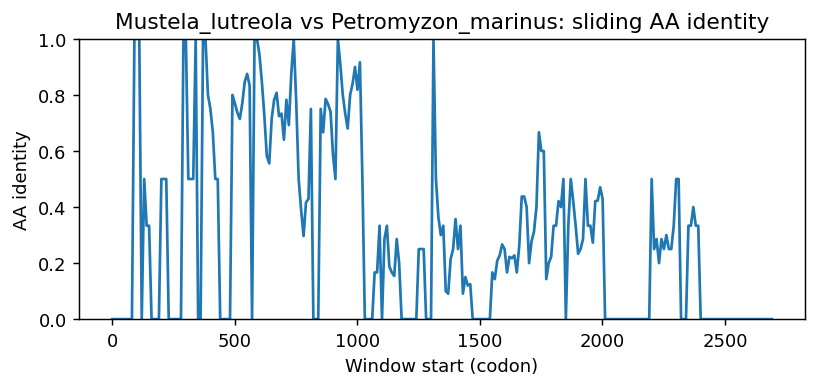
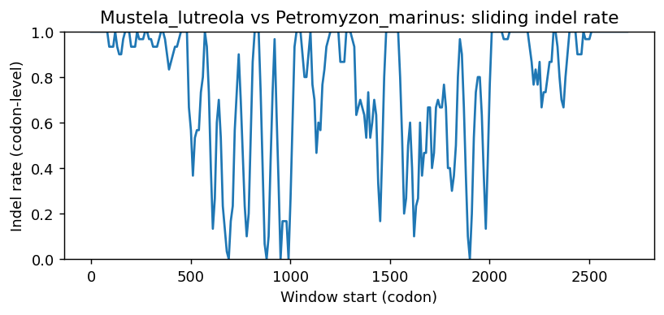
Mustela_lutreola vs Calypte_anna
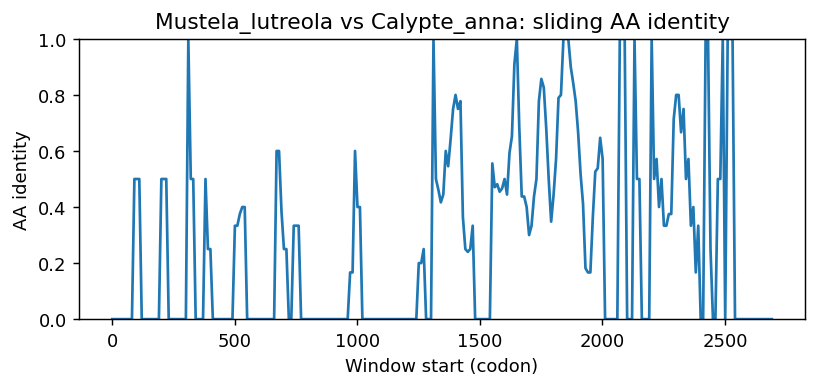
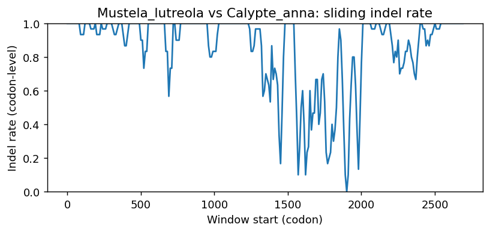
Mustela_lutreola vs Melopsittacus_undulatus
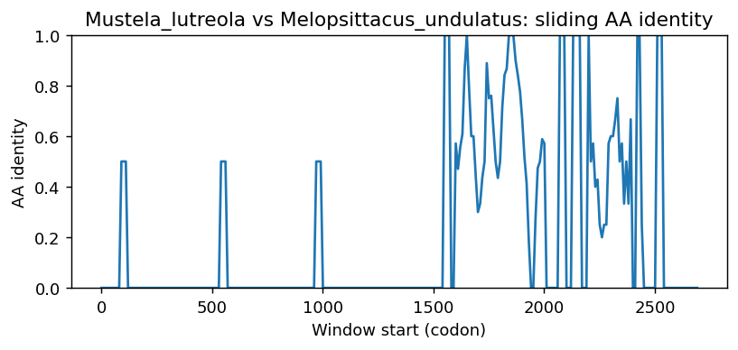
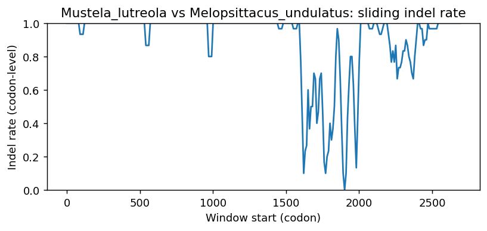
Mustela_lutreola vs Rhincodon_typus
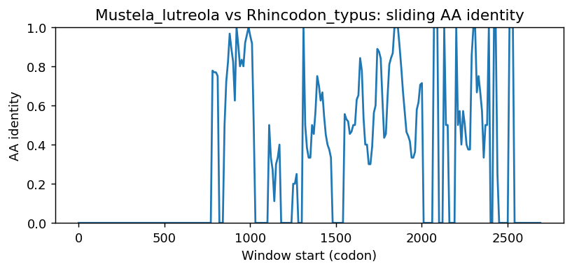
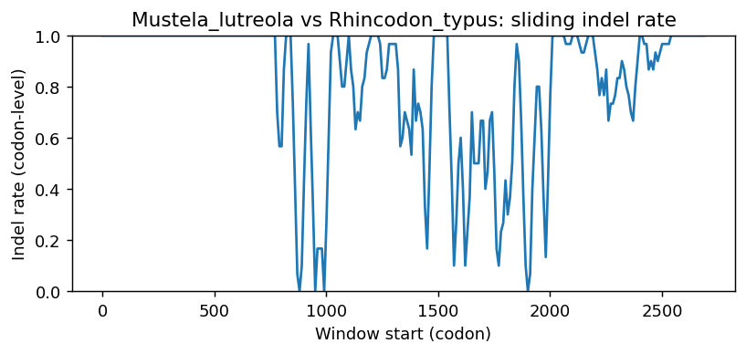
Mustela_lutreola vs Athene_cunicularia
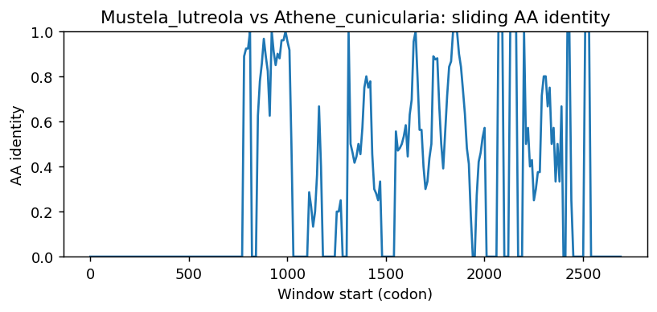
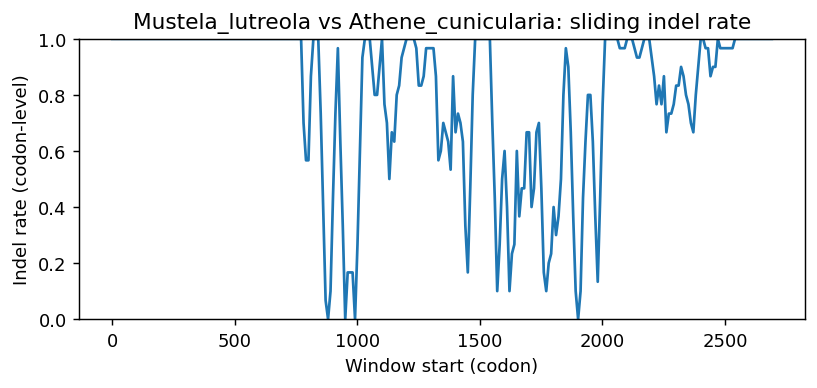
Mustela_lutreola vs Physeter_macrocephalus
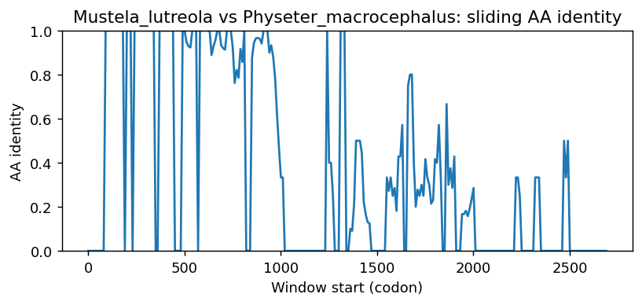
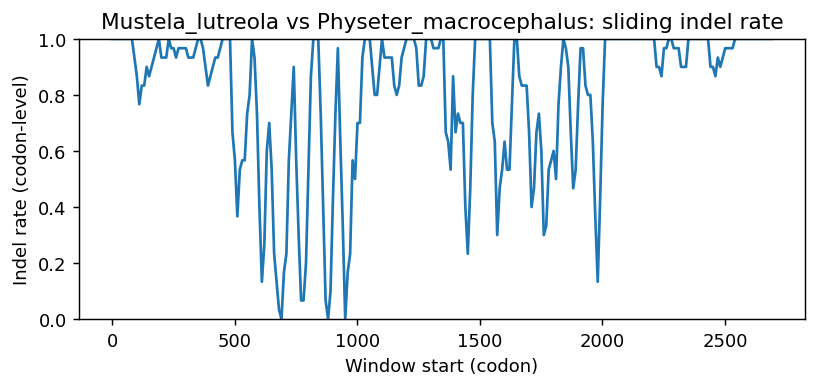
Methods (brief)
- CDS are translated (genetic code 1); proteins aligned by MAFFT when available, otherwise a progressive global aligner (BLOSUM62). Protein MSA is back-translated into a codon MSA.
- Pairwise metrics: AA/NT identities on aligned nongap positions; Ts/Tv; single-hit syn/nonsyn counts; gap events and largest contiguous gap cluster (codons); sliding-window AA identity and codon-level indel rate.
- Per-sequence diagnostics: GC content/skew, CpG density, AA low-complexity fraction via SEG-like entropy windows (win=12, H<2.2), and NT tandem repeats (homopolymers =5; di-nt =4 copies; tri-nt =3 copies).
- Correlations: Pearson/Spearman between AA identity and |GC difference|, mean AA LCR fraction, and mean NT repeat fraction across pairs.
- Risk classifier: combines identity, coverage, longest identical block, low-ID windows, max indel cluster, and up-ranks risk when mean LCR =0.25 or mean repeat =0.10 (soft-masking can remove seeds and reduce sensitivity).
Artifacts: pairwise_metrics.csv, per_sequence_composition.csv, correlations.csv, alignment_protein.faa, alignment_codon.fna.